Analisis Data Excel
Bagian ini menggambarkan fitur canggih yang ditawarkan Excel untuk menganalisis data
Sort | Filter | Conditional Formatting | Charts | Tabel Pivot | Tabel | What-If Analysis | Solver | Analysis ToolPak
Satu Kolom | Beberapa Kolom | Urutan Urutkan Kustom | Mengurutkan berdasarkan Warna | Daftar Terbalik | Daftar Acak | Fungsi SORT
Anda dapat mengurutkan data Excel Anda pada satu kolom atau beberapa kolom. Anda dapat mengurutkan dalam urutan menaik atau menurun.
Untuk mengurutkan pada satu kolom, jalankan langkah-langkah berikut.
-
Klik sel mana saja di kolom yang ingin Anda urutkan.

-
Untuk mengurutkan dalam urutan menaik , pada tab Data, dalam grup Urutkan & Filter, klik AZ.

Hasil:

Catatan : untuk mengurutkan dalam urutan menurun, klik ZA.
Untuk mengurutkan pada beberapa kolom, jalankan langkah-langkah berikut.
-
Pada tab Data, di grup Urutkan & Filter, klik Urutkan.

Kotak dialog Urutkan muncul.
-
Pilih Nama Belakang dari daftar tarik-turun 'Sort by'.

- Klik Tambah Tingkat.
-
Pilih Penjualan dari daftar tarik-turun 'Then by'.

-
Klik Oke.
Hasil. Catatan diurutkan berdasarkan Nama Belakang pertama dan Penjualan kedua.

Anda dapat menggunakan Excel untuk mengurutkan data dalam urutan khusus. Pada contoh di bawah ini, kami ingin mengurutkan berdasarkan Prioritas (Tinggi, Normal, Rendah).
-
Klik sel mana saja di dalam kumpulan data.

-
Pada tab Data, di grup Urutkan & Filter, klik Urutkan.
Kotak dialog Urutkan muncul.
- Pilih Prioritas dari daftar drop-down 'Sort by'.
-
Pilih Daftar Kustom dari daftar drop-down 'Order'.

Kotak dialog Daftar Kustom muncul.
- Ketik entri daftar.
-
Klik Oke.

-
Klik OK lagi.

Hasil. Rekaman diurutkan berdasarkan Prioritas (Tinggi, Normal, Rendah).

Contoh ini mengajarkan Anda cara mengurutkan data berdasarkan warna di Excel.

- Klik salah satu sel di dalam kumpulan data.
-
Pada tab Data, di grup Urutkan & Filter, klik Urutkan.
Kotak dialog Urutkan muncul.
-
Urutkan berdasarkan Nama Belakang (atau kolom lainnya), urutkan pada Warna Sel (Anda juga dapat mengurutkan pada Warna Font dan Ikon Sel), dan pilih warna hijau untuk tingkat pertama.

- Klik 'Copy Level' dua kali dan pilih warna lain.
-
Klik Oke.

Hasil.

Artikel ini mengajarkan Anda bagaimana untuk membalikkan sebuah daftar di Excel . Misalnya, kita ingin membalik daftar di kolom A di bawah ini.
- Masukkan nilai 1 ke dalam sel B1 dan nilai 2 ke dalam sel B2.
-
Pilih rentang B1:B2, klik sudut kanan bawah rentang ini, dan seret ke bawah ke sel B8.

- Klik sembarang nomor dalam daftar di kolom B.
-
Untuk mengurutkan dalam urutan menurun, pada tab Data, dalam grup Sort & Filter, klik ZA.

Hasil. Tidak hanya daftar di kolom B, tetapi juga daftar di kolom A telah dibalik.

Artikel ini mengajarkan Anda cara mengacak (mengacak) daftar di Excel . Misalnya, kami ingin mengacak daftar di kolom A di bawah ini.
- Pilih sel B1 dan masukkan fungsi RAND().
-
Klik di sudut kanan bawah sel B1 dan seret ke bawah ke sel B8.

- Klik sembarang nomor dalam daftar di kolom B.
-
Untuk mengurutkan dalam urutan menurun, pada tab Data, dalam grup Sort & Filter, klik ZA.
Hasil. Daftar acak di kolom A (diurutkan berdasarkan angka acak di atas).

Catatan : angka acak berubah setiap kali sel pada lembar dihitung. Jika Anda tidak menginginkan ini, cukup salin angka acak dan tempel sebagai nilai.
Gunakan fungsi SORT ajaib di Excel 365 untuk mengurutkan data Excel Anda pada satu kolom atau beberapa kolom. Mari kita coba.
-
Fungsi SORT sederhana di bawah ini hanya memiliki 1 argumen (A2:D15). Secara default, fungsi SORT mengurutkan berdasarkan kolom pertama, dalam urutan menaik.

Catatan : fungsi larik dinamis ini, dimasukkan ke dalam sel F2, mengisi beberapa sel. Wow! Perilaku ini di Excel 365 disebut menumpahkan.
-
Gunakan argumen kedua dari fungsi SORT untuk mengurutkan menurut kolom yang berbeda. Fungsi SORT di bawah ini mengurutkan berdasarkan kolom kedua.

Catatan : hanya edit rumus di sel F2. Excel akan melakukan sisanya.
-
Gunakan argumen ketiga dari fungsi SORT untuk mengurutkan dalam urutan yang berbeda. Fungsi SORT di bawah ini mengurutkan berdasarkan kolom pertama, dalam urutan menurun.

Catatan : gunakan 1 untuk mengurutkan dalam urutan menaik, gunakan -1 untuk mengurutkan dalam urutan menurun.
-
Untuk mengurutkan pada beberapa kolom, cukup berikan konstanta array. Misalnya, urutkan berdasarkan Nama Belakang pertama dan Penjualan kedua.

-
Terakhir, fungsi SORT lanjutan di bawah ini mengurutkan berdasarkan Nama Belakang terlebih dahulu (dalam urutan menaik) dan berdasarkan Penjualan kedua (dalam urutan menurun). Cukup keren, ya?

Filter Angka dan Teks | Filter Tanggal | Filter Tingkat Lanjut | Formulir Data | Hapus Duplikat | Menguraikan Data | Subtotal | Nilai Unik | Fungsi FILTER Excel 365
Filter data Excel Anda jika Anda hanya ingin menampilkan rekaman yang memenuhi kriteria tertentu.
- Klik salah satu sel di dalam kumpulan data.
-
Pada tab Data, di grup Urutkan & Filter, klik Filter.

Panah di header kolom muncul.

- Klik panah di sebelah Negara.
-
Klik Select All untuk menghapus semua kotak centang, dan klik kotak centang di sebelah USA.

-
Klik Oke.
Hasil. Excel hanya menampilkan penjualan di AS.

- Klik panah di sebelah Quarter.
-
Klik Select All untuk menghapus semua kotak centang, dan klik kotak centang di sebelah Qtr 4.

-
Klik Oke.
Hasil. Excel hanya menampilkan penjualan di AS dalam Qtr 4.

-
Untuk menghapus filter, pada tab Data, di grup Sort & Filter, klik Clear. Untuk menghapus filter dan panah, klik Filter.

Ada cara yang lebih cepat untuk memfilter data Excel.
-
Pilih sel.

-
Klik kanan, lalu klik Filter, Filter by Selected Cell's Value.

Hasil. Excel hanya menampilkan penjualan di AS.

Catatan: cukup pilih sel lain di kolom lain untuk memfilter kumpulan data ini lebih lanjut.
Contoh ini mengajarkan Anda cara menerapkan filter angka dan filter teks untuk hanya menampilkan rekaman yang memenuhi kriteria tertentu.
- Klik salah satu sel di dalam kumpulan data.
-
Pada tab Data, di grup Urutkan & Filter, klik Filter.
Panah di header kolom muncul.
Untuk menerapkan filter angka, jalankan langkah-langkah berikut.
- Klik panah di sebelah Penjualan.
-
Klik Filter Angka (opsi ini tersedia karena kolom Penjualan berisi data numerik) dan pilih Lebih Besar Dari dari daftar.

-
Masukkan 10.000 dan klik OK.

Hasil. Excel hanya menampilkan catatan di mana Penjualan lebih besar dari $10.000.

Catatan: Anda juga dapat menampilkan catatan yang sama dengan nilai, kurang dari nilai, di antara dua nilai, catatan x teratas, catatan yang di atas rata-rata, dll. Langit adalah batasnya!
Untuk menerapkan filter teks, jalankan langkah-langkah berikut.
- Klik panah di sebelah Nama Belakang.
-
Klik Filter Teks (opsi ini tersedia karena kolom Nama Belakang berisi data teks) dan pilih Sama dengan dari daftar.

-
Masukkan ?m* dan klik OK.

Catatan: Tanda tanya (?) cocok dengan tepat satu karakter. Tanda bintang (*) cocok dengan serangkaian karakter nol atau lebih.
Hasil. Excel hanya menampilkan catatan di mana karakter kedua Nama Belakang sama dengan m.

Catatan: Anda juga dapat menampilkan catatan yang dimulai dengan karakter tertentu, diakhiri dengan karakter tertentu, berisi atau tidak berisi karakter tertentu, dll. Langit adalah batasnya!
Contoh ini mengajarkan Anda cara menerapkan filter tanggal untuk hanya menampilkan rekaman yang memenuhi kriteria tertentu.
- Klik salah satu sel di dalam kumpulan data.
-
Pada tab Data, di grup Urutkan & Filter, klik Filter.
Panah di header kolom muncul.

- Klik panah di sebelah Tanggal.
-
Klik Select All untuk menghapus semua kotak centang, klik tanda + di sebelah 2015, dan klik kotak centang di sebelah Januari.

-
Klik Oke.
Hasil. Excel hanya menampilkan penjualan pada tahun 2015, pada bulan Januari.

- Klik panah di sebelah Tanggal.
- Klik Select All untuk memilih semua kotak centang.
-
Klik Filter Tanggal (opsi ini tersedia karena kolom Tanggal berisi tanggal) dan pilih Bulan Terakhir dari daftar.

Hasil. Excel hanya menampilkan penjualan bulan lalu.

Catatan: filter tanggal ini dan banyak filter tanggal lainnya bergantung pada tanggal hari ini.
Dan Kriteria | Or Kriteria | Rumus sebagai Kriteria
Contoh ini mengajarkan Anda bagaimana menerapkan filter lanjutan di Excel untuk hanya menampilkan catatan yang memenuhi kriteria kompleks.
Saat Anda menggunakan Filter Tingkat Lanjut, Anda harus memasukkan kriteria pada lembar kerja. Buat rentang Kriteria (batas biru di bawah hanya untuk ilustrasi) di atas kumpulan data Anda. Gunakan header kolom yang sama. Pastikan setidaknya ada satu baris kosong antara rentang Kriteria dan kumpulan data Anda.
Untuk menampilkan penjualan di AS dan di Qtr 4, lakukan langkah-langkah berikut.
-
Masukkan kriteria yang ditunjukkan di bawah ini pada lembar kerja.

- Klik salah satu sel di dalam kumpulan data.
-
Pada tab Data, di grup Urutkan & Filter, klik Lanjutan.

- Klik pada kotak Criteria range dan pilih range A1:D2 (biru).
-
Klik Oke.

Perhatikan opsi untuk menyalin kumpulan data yang difilter ke lokasi lain dan hanya menampilkan catatan unik (jika kumpulan data Anda berisi duplikat).
Hasil.

Tidak ada ilmu roket sejauh ini. Kami dapat mencapai hasil yang sama dengan filter normal. Kami membutuhkan Filter Lanjutan untuk kriteria Or.
Untuk menampilkan penjualan di AS di Qtr 4 atau di Inggris di Qtr 1, lakukan langkah-langkah berikut.
- Masukkan kriteria yang ditunjukkan di bawah ini pada lembar kerja.
- Pada tab Data, di grup Sortir & Filter, klik Lanjutan, dan sesuaikan rentang Kriteria ke rentang A1:D3 (biru).
-
Klik Oke.

Hasil.

Untuk menampilkan penjualan di AS di Qtr 4 lebih besar dari $10.000 atau di Inggris di Qtr 1, jalankan langkah-langkah berikut.
- Masukkan kriteria (+rumus) yang ditunjukkan di bawah ini pada lembar kerja.
- Pada tab Data, di grup Sort & Filter, klik Advanced, dan sesuaikan rentang Kriteria ke rentang A1:E3 (biru).
-
Klik Oke.

Hasil.

Catatan: selalu tempatkan rumus di kolom baru. Jangan gunakan label kolom atau gunakan label kolom yang tidak ada dalam kumpulan data Anda. Buat referensi relatif ke sel pertama di kolom (B6). Rumus harus mengevaluasi ke TRUE atau FALSE.
Data Formulir di Excel memungkinkan Anda untuk menambahkan, mengedit, dan catatan delete (baris) dan hanya menampilkan catatan-catatan yang memenuhi kriteria tertentu. Terutama ketika Anda memiliki baris yang lebar dan Anda ingin menghindari pengguliran berulang ke kanan dan kiri, formulir data dapat berguna.
-
Buka file Excel yang dapat diunduh.

- Tambahkan perintah Formulir ke Toolbar Akses Cepat.
- Klik perintah Formulir.
-
Gunakan tombol Temukan Sebelumnya dan Temukan Berikutnya untuk beralih dengan mudah dari satu rekaman (baris) ke rekaman lainnya.

Catatan: gunakan tombol Baru atau Hapus untuk menambah atau menghapus rekaman. Setelah Anda mulai mengedit rekaman, Anda dapat menggunakan tombol Pulihkan untuk membatalkan perubahan apa pun yang Anda buat.
- Untuk menampilkan hanya record yang memenuhi kriteria tertentu, klik tombol Criteria.
-
Masukkan kriteria dan klik tombol Form.

-
Sekarang, saat Anda menggunakan tombol Temukan Sebelumnya dan Temukan Berikutnya, Anda hanya akan melihat catatan yang memenuhi kriteria ini. Dalam contoh kita, hanya mencatat 13.

Catatan: untuk mengedit kriteria, klik tombol Kriteria lagi. Untuk menutup formulir data, klik tombol Tutup.
Contoh ini mengajarkan Anda cara menghapus duplikat di Excel.
- Klik salah satu sel di dalam kumpulan data.
-
Pada tab Data, dalam grup Alat Data, klik Hapus Duplikat.

Kotak dialog berikut muncul.
-
Biarkan semua kotak centang dicentang dan klik OK.

Hasil. Excel menghapus semua baris identik (biru) kecuali baris identik pertama yang ditemukan (kuning).


Untuk menghapus baris dengan nilai yang sama di kolom tertentu, jalankan langkah-langkah berikut.
- Misalnya, hapus baris dengan Nama Belakang dan Negara yang sama.
-
Periksa Nama Belakang dan Negara dan klik OK.

Hasil. Excel menghapus semua baris dengan Nama Belakang dan Negara yang sama (biru) kecuali untuk contoh pertama yang ditemukan (kuning).


Mari kita lihat satu lagi fitur Excel keren yang menghapus duplikat. Anda dapat menggunakan Filter Tingkat Lanjut untuk mengekstrak baris unik (atau nilai unik dalam kolom).
-
Pada tab Data, dalam grup Sort & Filter, klik Advanced.
Kotak dialog Filter Lanjutan muncul.
- Klik Salin ke lokasi lain.
- Klik pada kotak List range dan pilih range A1:A17 (lihat gambar di bawah).
- Klik pada kotak Salin ke dan pilih sel F1 (lihat gambar di bawah).
-
Periksa Catatan unik saja.

-
Klik Oke.
Hasil. Excel menghapus semua duplikat nama belakang dan mengirimkan hasilnya ke kolom F.

Catatan: pada langkah 8, alih-alih memilih rentang A1:A17, pilih rentang A1:D17 untuk mengekstrak baris unik.
-
Terakhir, Anda dapat menggunakan pemformatan bersyarat di Excel untuk menyorot nilai duplikat.

-
Atau gunakan pemformatan bersyarat di Excel untuk menyorot baris duplikat.

Tip: kunjungi halaman kami tentang menemukan duplikat untuk mempelajari lebih lanjut tentang trik ini.
Menguraikan data membuat data Anda lebih mudah dilihat. Dalam contoh ini kita akan menjumlahkan baris data terkait dan menciutkan sekelompok kolom.
-
Pertama, urutkan data pada kolom Perusahaan.

-
Pada tab Data, di grup Outline, klik Subtotal .

- Pilih kolom Company, kolom yang kita gunakan untuk outline lembar kerja kita.
- Gunakan fungsi Hitung.
- Centang kotak Perusahaan.
-
Klik Oke.

Hasil:

-
Untuk menciutkan sekelompok sel, klik tanda minus. Anda dapat menggunakan angka untuk menciutkan atau memperluas grup berdasarkan level. Misalnya, klik 2 untuk hanya menampilkan subtotal.

Catatan: klik 1 untuk hanya menampilkan Grand Count, klik 3 untuk menampilkan semuanya.
Untuk menciutkan sekelompok kolom, jalankan langkah-langkah berikut.
- Misalnya, pilih kolom A dan B.
-
Pada tab Data, di grup Outline, klik Group.

-
Klik tanda minus di atas kolom C (akan berubah menjadi tanda plus).
Hasil:

-
Untuk menghapus kerangka, klik sel mana pun di dalam kumpulan data dan pada tab Data, di grup Kerangka, klik Subtotal, Hapus semua.

Baris Tersembunyi oleh Filter | Baris Tersembunyi Secara Manual
Gunakan fungsi SUBTOTAL di Excel alih-alih SUM, COUNT, MAX, dll. untuk mengabaikan baris yang disembunyikan oleh filter atau untuk mengabaikan baris yang disembunyikan secara manual.
-
Misalnya, fungsi SUM di bawah ini menghitung total penjualan.

- Terapkan filter.
-
Fungsi SUM menyertakan baris yang disembunyikan oleh filter.

-
Fungsi SUBTOTAL mengabaikan baris yang disembunyikan oleh filter dan menghitung hasil yang benar.

Catatan: 109 adalah argumen untuk Sum jika Anda menggunakan fungsi SUBTOTAL.
-
Tidak mudah untuk mengingat argumen mana yang termasuk dalam fungsi yang mana. Untungnya, fitur AutoComplete di Excel membantu Anda dalam hal ini.

Catatan: daripada menggunakan 101 (AVERAGE) untuk argumen pertama, Anda juga dapat menggunakan 1 (AVERAGE), daripada menggunakan 102 (COUNT), Anda juga dapat menggunakan 2 (COUNT), dll. Saat memfilter data, tidak ada perbedaan antara angka 101-111 dan angka 1-11. Kami merekomendasikan menggunakan angka 101-111 karena Excel menggunakan angka-angka ini dalam baris total di akhir tabel.
-
Misalnya, fungsi SUM di bawah ini menjumlahkan rentang sel.

- Sembunyikan baris 2.
-
Fungsi SUM menyertakan baris yang disembunyikan secara manual.

-
Fungsi SUBTOTAL mengabaikan baris yang disembunyikan secara manual dan menghitung hasil yang benar.

Catatan: angka 101-111 mengabaikan baris yang disembunyikan secara manual. Namun, angka 1-11 menyertakan baris yang disembunyikan secara manual!
Ekstrak Nilai Unik | Filter untuk Nilai Unik | Fungsi Unik | Hapus Duplikat
Untuk mengekstrak nilai unik di Excel atau untuk memfilter nilai unik, gunakan Filter Tingkat Lanjut. Jika Anda memiliki Excel 365, cukup gunakan fungsi UNIK ajaib untuk mengekstrak nilai unik.
Saat menggunakan Filter Tingkat Lanjut di Excel, selalu masukkan label teks di bagian atas setiap kolom data.
-
Klik sel dalam rentang daftar.

-
Pada tab Data, di grup Urutkan & Filter, klik Tingkat Lanjut.
Kotak dialog Filter Lanjutan muncul.
- Klik Salin ke lokasi lain (lihat gambar di bawah).
- Klik di kotak Salin ke dan pilih sel C1.
- Periksa Catatan unik saja.
-
Klik Oke.

Hasil:

Catatan: Excel menghapus semua nilai duplikat (Singa di sel A7 dan Gajah di sel A9) dan mengirimkan nilai unik ke kolom C. Anda juga bisa menggunakan alat ini untuk mengekstrak baris unik di Excel.
Memfilter nilai unik di Excel adalah hal yang mudah.
-
Klik sel dalam rentang daftar.
-
Pada tab Data, di grup Urutkan & Filter, klik Tingkat Lanjut.
- Klik Filter daftar, di tempat (lihat gambar di bawah).
- Periksa Catatan unik saja.
-
Klik Oke.

Hasil:

Catatan: baris 7 dan 9 disembunyikan. Untuk menghapus filter ini, pada tab Data, di grup Urutkan & Filter, klik Hapus. Anda juga dapat menggunakan alat ini untuk memfilter baris unik di Excel.
Jika Anda memiliki Excel 365, cukup gunakan fungsi UNIK ajaib untuk mengekstrak nilai unik.
-
Fungsi UNIQUE di bawah ini (tanpa argumen tambahan) mengekstrak nilai unik.

Catatan: fungsi larik dinamis ini, dimasukkan ke dalam sel C1, mengisi beberapa sel. Wow! Perilaku ini di Excel 365 disebut menumpahkan.
-
Fungsi UNIQUE di bawah ini mengekstrak nilai yang muncul tepat satu kali.

Catatan: fungsi UNIK memiliki 2 argumen opsional. Nilai default 0 (argumen kedua) memberi tahu fungsi UNIQUE untuk mengekstrak nilai dari larik vertikal. Nilai 1 (argumen ketiga) memberi tahu fungsi UNIQUE untuk mengekstrak nilai yang muncul tepat satu kali.
Untuk menemukan nilai unik (atau baris unik) dan menghapus nilai duplikat (atau baris duplikat) secara bersamaan, gunakan alat Hapus Duplikat di Excel.
Pada tab Data, dalam grup Alat Data, klik Hapus Duplikat.
Pada contoh di bawah ini, Excel menghapus semua baris identik (biru) kecuali baris identik pertama yang ditemukan (kuning).
Catatan: kunjungi halaman kami tentang menghapus duplikat untuk mempelajari lebih lanjut tentang alat Excel yang hebat ini.
.Gunakan fungsi FILTER ajaib di Excel 365 untuk mengekstrak catatan yang memenuhi kriteria tertentu. Fungsi FILTER cukup serbaguna.
-
Fungsi FILTER sederhana di bawah ini memiliki dua argumen dan mengekstrak semua catatan USA.

Catatan: Fungsi array dinamis ini, dimasukkan ke dalam sel F2, mengisi beberapa sel.
-
Fungsi FILTER dinamis di bawah ini mengekstrak semua catatan UK.

-
Fungsi FILTER memiliki argumen ketiga opsional. Gunakan argumen ini untuk menampilkan pesan yang ramah (bukan kesalahan #CALC! ) jika tidak ada catatan yang ditemukan.

-
Fungsi FILTER di bawah ini menggunakan operator perkalian (*) untuk mengekstrak semua catatan di mana Penjualan lebih besar dari $ 10.000 dan Negara sama dengan "USA".

-
Fungsi FILTER di bawah ini menggunakan operator tambahan (+) untuk mengekstrak semua catatan di mana Nama Belakang sama dengan "Smith" atau Nama Belakang sama dengan "Brown".

-
Tambahkan fungsi SORT untuk mengurutkan catatan menurut kolom pertama.

Catatan: secara default, fungsi SORT di Excel 365 mengurutkan menurut kolom pertama, dalam urutan naik.
Sorot Aturan Sel | Clear Rules | Aturan Atas/Bawah | Pemformatan Bersyarat dengan Rumus | Kelola Aturan | Data Bars | Skala Warna | Set Ikon | Temukan Duplikat | Baris Warna Alternatif | Bandingkan Dua Daftar | Aturan yang Bertentangan | Heat Map
Pemformatan bersyarat di Excel memungkinkan Anda untuk menyorot sel dengan warna tertentu, tergantung pada nilai sel.
Untuk menyorot sel yang lebih besar dari nilai, jalankan langkah-langkah berikut.
-
Pilih range A1:A10.

-
Pada tab Home, dalam grup Styles, klik Conditional Formatting.

-
Klik Highlight Cells Rules, Greater Than.

-
Masukkan nilai 80 dan pilih gaya pemformatan.

-
Klik Oke.
Hasil. Excel menyoroti sel yang lebih besar dari 80.

-
Ubah nilai sel A1 menjadi 81.
Hasil. Excel mengubah format sel A1 secara otomatis.

Catatan: Anda juga dapat menggunakan kategori ini (lihat langkah 3) untuk menyorot sel yang kurang dari nilai, di antara dua nilai, sama dengan nilai, sel yang berisi teks tertentu, tanggal (hari ini, minggu lalu, bulan depan, dll), duplikat atau nilai unik.
Untuk menghapus aturan pemformatan bersyarat, jalankan langkah-langkah berikut.
-
Pilih range A1:A10.

-
Pada tab Home, dalam grup Styles, klik Conditional Formatting.
-
Klik Clear Rules, Clear Rules from Selected Cells.

Untuk menyorot sel yang di atas rata-rata, jalankan langkah-langkah berikut.
-
Pilih range A1:A10.

-
Pada tab Home, dalam grup Styles, klik Conditional Formatting.
-
Klik Top/Bottom Rules, Above Average.

-
Pilih gaya pemformatan.

-
Klik Oke.
Hasil. Excel menghitung rata-rata (42,5) dan memformat sel yang berada di atas rata-rata ini.

Catatan: Anda juga dapat menggunakan kategori ini (lihat langkah 3) untuk menyorot n item teratas, n persen teratas, n item terbawah, n persen terbawah, atau sel yang berada di bawah rata-rata.
Tingkatkan keterampilan Excel Anda ke tingkat berikutnya dan gunakan rumus untuk menentukan sel mana yang akan diformat. Rumus yang menerapkan pemformatan bersyarat harus dievaluasi ke TRUE atau FALSE.
-
Pilih range A1:E5.

-
Pada tab Home, dalam grup Styles, klik Conditional Formatting.
-
Klik New Rule.

- Pilih 'Use a formula to determine which cells to format'.
- Masukkan rumus =ISODD(A1)
-
Pilih gaya pemformatan dan klik OK.

Hasil. Excel menyoroti semua angka ganjil.

Penjelasan: selalu tulis rumus untuk sel kiri atas dalam range yang dipilih. Excel secara otomatis menyalin rumus ke sel lain. Jadi, sel A2 berisi rumus =ISODD(A2), sel A3 berisi rumus =ISODD(A3), dll.
Berikut contoh lain.
-
Pilih range A2:D7.

- Ulangi langkah 2-4 di atas.
- Masukkan rumus =$C2="USA"
-
Pilih gaya pemformatan dan klik OK.

Hasil. Excel menyoroti semua pesanan USA.

Penjelasan: kami memperbaiki referensi ke kolom C dengan menempatkan simbol $ di depan huruf kolom ($C2). Akibatnya, sel B2, C2 dan sel D2 juga berisi rumus =$C2="USA", sel A3, B3, C3 dan D3 berisi rumus =$C3="USA", dll.
Untuk menampilkan semua aturan pemformatan bersyarat dalam buku kerja, gunakan Pengelola Aturan Conditional Formatting. Anda juga dapat menggunakan layar ini untuk membuat, mengedit, dan menghapus aturan.
-
Pilih sel A1.

-
Pada tab Home, dalam grup Styles, klik Conditional Formatting.
-
Klik Kelola Aturan.

Manajer Aturan Conditional Formatting muncul.

Catatan: karena kami memilih sel A1, Excel menunjukkan aturan yang diterapkan pada range A1:A10.
-
Dari daftar drop-down, ubah Pilihan Saat Ini ke Lembar Kerja Ini, untuk melihat semua aturan pemformatan bersyarat di lembar kerja ini.

Catatan: klik New Rule, Edit Aturan, dan Clear Rules untuk membuat, mengedit, dan menghapus aturan.
Bilah data di Excel membuatnya sangat mudah untuk memvisualisasikan nilai dalam range sel. Bilah yang lebih panjang mewakili nilai yang lebih tinggi.
Untuk menambahkan bilah data, jalankan langkah-langkah berikut.
- Pilih range.
-
Pada tab Home, dalam grup Styles, klik Conditional Formatting.
-
Klik Data Bar dan klik subtipe.

Hasil:

Penjelasan: secara default, sel yang menyimpan nilai minimum (0 jika tidak ada nilai negatif) tidak memiliki bilah data dan sel yang menyimpan nilai maksimum (95) memiliki bilah data yang mengisi seluruh sel. Semua sel lainnya diisi secara proporsional.
-
Ubah nilainya.
Hasil. Excel memperbarui bilah data secara otomatis. Baca terus untuk menyesuaikan lebih lanjut bilah data ini.

- Pilih range A1:A10.
- Pada tab Home, dalam grup Styles, klik Conditional Formatting, Kelola Aturan.
-
Klik Edit aturan.
Excel meluncurkan kotak dialog Edit Aturan Pemformatan. Di sini Anda dapat menyesuaikan lebih lanjut bilah data Anda (Show Bar Only, Minimum dan Maximum, Bar Appearance, Negative Value and Axis, Bar Direction, dll).

Catatan: untuk langsung meluncurkan kotak dialog ini untuk aturan baru, pada langkah 3, klik Aturan Lainnya.
- Pilih Number dari daftar drop-down Minimum dan masukkan nilai 100. Pilih Number dari daftar drop-down Maximum dan masukkan nilai 150.
-
Klik OK dua kali.

Hasil.

Penjelasan: sel yang menyimpan nilai 100 (jika ada) tidak memiliki bilah data dan sel yang menyimpan nilai 150 (jika ada) memiliki bilah data yang mengisi seluruh sel. Semua sel lainnya diisi secara proporsional.
Skala Warna di Excel membuatnya sangat mudah untuk memvisualisasikan nilai dalam range sel. Bayangan warna mewakili nilai dalam sel.
Untuk menambahkan skala warna, jalankan langkah-langkah berikut.
- Pilih range.
-
Pada tab Home, dalam grup Styles, klik Conditional Formatting.
-
Klik Color Scales dan klik subtipe.

Hasil:

Penjelasan: secara default, untuk skala 3-Warna, Excel menghitung persentil ke-50 (juga dikenal sebagai median, nilai tengah, atau titik tengah). Sel yang memegang nilai minimum (9) berwarna merah. Sel yang memegang median (36) berwarna kuning, dan sel yang memegang nilai maksimum (80) berwarna hijau. Semua sel lainnya diwarnai secara proporsional.
Baca terus untuk menyesuaikan lebih lanjut skala warna ini.
- Pilih range A1:A7.
-
Pada tab Home, dalam grup Styles, klik Conditional Formatting, Kelola Aturan.
-
Klik Edit aturan.
Excel meluncurkan kotak dialog Edit Aturan Pemformatan. Di sini Anda dapat menyesuaikan lebih lanjut skala warna Anda (Gaya Format, Minimum, Titik Tengah dan Maksimum, Warna, dll).

Catatan: untuk langsung meluncurkan kotak dialog ini untuk aturan baru, pada langkah 3, klik Aturan Lainnya.
- Pilih Skala 2-Warna dari daftar drop-down Format Style dan pilih putih dan biru.
-
Klik OK dua kali.

Hasil.

Kumpulan Ikon di Excel membuatnya sangat mudah untuk memvisualisasikan nilai dalam range sel. Setiap ikon mewakili range nilai.
Untuk menambahkan kumpulan ikon, jalankan langkah-langkah berikut.
- Pilih range.
-
Pada tab Home, dalam grup Styles, klik Conditional Formatting.
-
Klik Kumpulan Ikon dan klik subtipe.

Hasil:

Penjelasan: secara default, untuk 3 ikon, Excel menghitung persen ke-67 dan ke-33. Persen ke-67 = min + 0,67 * (maks-min) = 2 + 0,67 * (95-2) = 64,31. Persen ke-33 = min + 0,33 * (maks-min) = 2 + 0,33 * (95-2) = 32,69. Panah hijau akan ditampilkan untuk nilai yang sama dengan atau lebih besar dari 64,31. Panah kuning akan ditampilkan untuk nilai kurang dari 64,31 dan sama dengan atau lebih besar dari 32,69. Panah merah akan ditampilkan untuk nilai kurang dari 32,69.
-
Ubah nilainya.
Hasil. Excel memperbarui set ikon secara otomatis. Baca terus untuk menyesuaikan lebih lanjut kumpulan ikon ini.

- Pilih range A1:A10.
-
Pada tab Home, dalam grup Styles, klik Conditional Formatting, Kelola Aturan.
-
Klik Edit aturan.
Excel meluncurkan kotak dialog Edit Aturan Pemformatan. Di sini Anda dapat menyesuaikan lebih lanjut set ikon Anda (Gaya Ikon, Urutan Ikon Terbalik, Hanya Tampilkan Ikon, Ikon, Nilai, Jenis, dll).

Catatan: untuk langsung meluncurkan kotak dialog ini untuk aturan baru, pada langkah 3, klik Aturan Lainnya.
-
Pilih 3 simbol (Tidak Dilingkari) dari daftar drop-down Icon Style. Pilih No Cell Icon dari daftar drop-down Icon kedua. Ubah Types menjadi Number dan ubah Values menjadi 100 dan 0. Pilih simbol lebih besar dari (>) di sebelah nilai 0.
-
Klik OK dua kali.

Hasil.

Nilai Duplikat | Triplicates | Baris Duplikat
Contoh ini mengajarkan Anda cara menemukan nilai duplikat (atau rangkap tiga) dan cara menemukan baris duplikat di Excel.
Untuk menemukan dan menyorot nilai duplikat di Excel, jalankan langkah-langkah berikut.
-
Pilih range A1:C10.

-
Pada tab Home, dalam grup Styles, klik Conditional Formatting.
-
Klik Sorot Aturan Sel, Nilai Duplikat.

-
Pilih gaya pemformatan dan klik OK.

Hasil. Excel menyoroti nama duplikat.

Catatan: pilih Unik dari daftar drop-down pertama untuk menyorot nama unik.
Secara default, Excel menyoroti duplikat (Juliet, Delta), rangkap tiga (Sierra), dll. (lihat gambar sebelumnya). Jalankan langkah-langkah berikut untuk menyorot rangkap tiga saja.
-
Pertama, hapus aturan pemformatan bersyarat sebelumnya.
- Pilih range A1:C10.
-
Pada tab Home, dalam grup Styles, klik Conditional Formatting.
-
Klik New Rule.
- Pilih 'Use a formula to determine which cells to format'.
- Masukkan rumus = COUNTIF ($A$1:$C$10,A1)=3.
-
Pilih gaya pemformatan dan klik OK.

Hasil. Excel menyoroti nama rangkap tiga.

Penjelasan: = COUNTIF ($A$1:$C$10,A1) menghitung jumlah nama dalam range A1:C10 yang sama dengan nama di sel A1. Jika COUNTIF($A$1:$C$10,A1) = 3, Excel memformat sel A1. Selalu tulis rumus untuk sel kiri atas dalam range yang dipilih (A1:C10). Excel secara otomatis menyalin rumus ke sel lain. Jadi, sel A2 berisi rumus =COUNTIF($A$1:$C$10,A2)=3, sel A3 =COUNTIF($A$1:$C$10,A3)=3, dll. Perhatikan bagaimana kita membuat referensi absolut ($A$1:$C$10) untuk memperbaiki referensi ini.
Catatan: Anda dapat menggunakan formula apa pun yang Anda suka. Misalnya, gunakan rumus ini =COUNTIF($A$1:$C$10,A1)>3 untuk menyorot nama yang muncul lebih dari 3 kali.
Untuk menemukan dan menyorot baris duplikat di Excel, gunakan COUNTIFS (dengan huruf S di akhir) alih-alih COUNTIF.
-
Pilih range A1:C10.

-
Pada tab Home, dalam grup Styles, klik Conditional Formatting.
-
Klik New Rule.
- Pilih 'Use a formula to determine which cells to format'.
- Masukkan rumus =COUNTIFS(Hewan,$A1,Benua,$B1,Negara,$C1)>1.
-
Pilih gaya pemformatan dan klik OK.

Catatan: Nama Range Hewan mengacu pada range A1:A10, Nama Range Benua mengacu pada range B1:B10 dan Nama Range Negara mengacu pada range C1:C10. =COUNTIFS(Animals,$A1,Continents,$B1,Countries,$C1) menghitung jumlah baris berdasarkan beberapa kriteria (Leopard, Afrika, Zambia).
Hasil. Excel menyoroti baris duplikat.

Penjelasan: jika COUNTIFS(Hewan,$A1, Benua,$B1,Negara,$C1) > 1, dengan kata lain, jika ada beberapa baris (Leopard, Afrika, Zambia), Excel memformat sel A1. Selalu tulis rumus untuk sel kiri atas dalam range yang dipilih (A1:C10). Excel secara otomatis menyalin rumus ke sel lain. Kami memperbaiki referensi ke setiap kolom dengan menempatkan simbol $ di depan huruf kolom ($A1, $B1 dan $C1). Akibatnya, sel A1, B1 dan C1 berisi rumus yang sama, sel A2, B2 dan C2 berisi rumus =COUNTIFS(Animals,$A2,Continents,$B2,Countries,$C2)>1, dll.
-
Terakhir, Anda dapat menggunakan alat Hapus Duplikat di Excel untuk menghapus baris duplikat dengan cepat. Pada tab Data, dalam grup Alat Data, klik Hapus Duplikat.

Pada contoh di bawah ini, Excel menghapus semua baris identik (biru) kecuali baris identik pertama yang ditemukan (kuning).


Catatan: kunjungi halaman kami tentang menghapus duplikat untuk mempelajari lebih lanjut tentang alat Excel yang hebat ini.
Contoh ini menunjukkan cara menggunakan pemformatan bersyarat untuk menaungi baris alternatif. Mengarsir setiap baris lain dalam range membuatnya lebih mudah untuk membaca data Anda.
-
Pilih range.

-
Pada tab Home, dalam grup Styles, klik Conditional Formatting.
-
Klik New Rule.
- Pilih 'Use a formula to determine which cells to format'.
- Masukkan rumus =MOD(ROW(),2).
-
Pilih gaya pemformatan dan klik OK.

Hasil.

Penjelasan: fungsi MOD memberikan sisa pembagian. Fungsi ROW() mengembalikan nomor baris. Misalnya, untuk baris ketujuh, MOD(7,2) = 1 karena 7 dibagi 2 sama dengan 3 dengan sisa 1. Untuk baris kedelapan, MOD(8,2) = 0 karena 8 dibagi 2 sama dengan 4 dengan sisa 0. Akibatnya, semua baris ganjil menghasilkan 1 (TRUE) dan akan diarsir.
Contoh ini menjelaskan cara membandingkan dua daftar menggunakan pemformatan bersyarat. Misalnya, Anda mungkin memiliki dua daftar tim NFL.

Untuk menyorot tim di daftar pertama yang tidak ada di daftar kedua, jalankan langkah-langkah berikut.
- Pertama, pilih range A1:A18 dan beri nama firstList, pilih range B1:B20 dan beri nama secondList.
- Selanjutnya, pilih range A1:A18.
-
Pada tab Home, dalam grup Styles, klik Conditional Formatting.
-
Klik New Rule.
- Pilih 'Use a formula to determine which cells to format'.
- Masukkan rumus = COUNTIF (Daftar kedua,A1)=0.
-
Pilih gaya pemformatan dan klik OK.

Hasil. Miami Dolphins dan Tennessee Titans tidak ada dalam daftar kedua.

Penjelasan: = COUNTIF (secondList,A1) menghitung jumlah tim di SecondList yang sama dengan tim di sel A1. Jika COUNTIF(secondList,A1) = 0, tim di sel A1 tidak ada dalam daftar kedua. Akibatnya, Excel mengisi sel dengan warna latar belakang biru. Selalu tulis rumus untuk sel kiri atas dalam range yang dipilih (A1:A18). Excel secara otomatis menyalin rumus ke sel lain. Jadi, sel A2 berisi rumus =COUNTIF(secondList,A2)=0, sel A3 =COUNTIF(secondList,A3)=0, dst.
8. Untuk menyorot tim di daftar kedua yang tidak ada di daftar pertama, pilih range B1:B20, buat aturan baru menggunakan rumus =COUNTIF(firstList,B1)=0, dan atur formatnya menjadi isian oranye.
Hasil. Denver Broncos, Arizona Cardinals, Minnesota Vikings dan Pittsburgh Steelers tidak ada dalam daftar pertama.

Terkadang beberapa aturan pemformatan bersyarat dalam konflik Excel. Aturan yang lebih tinggi selalu menang. Contoh ini menggambarkan dua hasil yang berbeda.
-
Nilai 95 lebih tinggi dari 80 tetapi juga merupakan nilai tertinggi (Top 1). Format (isian kuning vs isian hijau dan warna teks kuning vs warna teks hijau) bertentangan. Aturan yang lebih tinggi selalu menang. Akibatnya, nilai 95 berwarna kuning.

Hasil:

-
Pindahkan aturan kedua ke atas. Nilai 95 adalah nilai tertinggi (Atas 1) tetapi juga lebih tinggi dari 80. Format (isian hijau vs isian kuning dan warna teks hijau vs warna teks kuning) bertentangan. Aturan yang lebih tinggi selalu menang. Hasilnya, nilai 95 berwarna hijau.

Hasil:

Catatan: hanya gunakan kotak centang Stop If True untuk kompatibilitas mundur dengan versi Microsoft Excel yang lebih lama.
Untuk membuat peta panas di Excel, cukup gunakan pemformatan bersyarat. Peta panas adalah representasi grafis dari data di mana nilai-nilai individual direpresentasikan sebagai warna.
Untuk membuat peta panas, jalankan langkah-langkah berikut.
-
Pilih range B3:M11.

-
Pada tab Home, dalam grup Styles, klik Conditional Formatting.
-
Klik Color Scales dan klik subtipe.

Hasil. Peta panas dengan angka.

- Pilih range B3:M11.
-
Klik kanan, lalu klik Format Cells (atau tekan Ctrl+1).
- Pilih kategori Kustom.
-
Ketik kode format angka berikut: ;;;

-
Klik Oke.
Hasil. Sebuah peta panas di Excel.

Catatan: Anda dapat dengan jelas melihat bahwa musim panas 2014 di New York sejuk dan Natal 2015 di New York hangat.
Buat Charts | Ubah Jenis Charts | Beralih Baris/Kolom | Posisi Legenda | Label Data | Charts Kolom | Charts Garis | Pie Chart | Bar Chart | Chart Area | Plot Scatter | Seri Data | Axes | Lembar Chart | Trendline | Error Bar | Sparkline | Chart Kombinasi | Chart Pengukur | Chart Termometer | Chart Gantt | Chart Pareto
Charts sederhana di Excel bisa mengatakan lebih dari satu lembar penuh angka. Seperti yang akan Anda lihat, membuat grafik sangat mudah.
Buat Charts
Untuk membuat diagram garis, lakukan langkah-langkah berikut.
1. Pilih rentang A1:D7.

2. Pada tab Sisipkan, di grup Charts, klik simbol Garis.
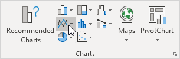
3. Klik Garis dengan Penanda.
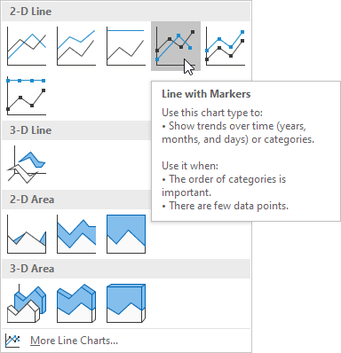
Hasil:
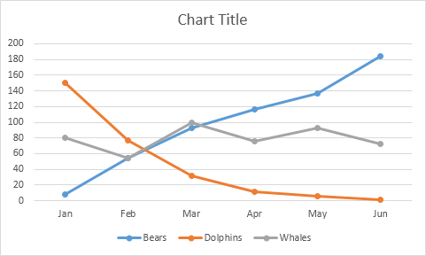
Catatan: masukkan judul dengan mengklik Judul Charts. Misalnya, Populasi Satwa Liar.
Ubah Jenis Charts
Anda dapat dengan mudah mengubah ke jenis grafik yang berbeda kapan saja.
1. Pilih grafik.
2. Pada tab Desain, dalam grup Tipe, klik Ubah Tipe Charts.

3. Di sisi kiri, klik Kolom.

4. Klik Oke.
Hasil:
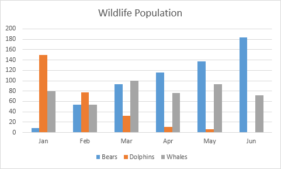
Beralih Baris/Kolom
Jika Anda ingin menampilkan hewan (bukan bulan) pada sumbu horizontal, lakukan langkah-langkah berikut.
1. Pilih grafik.
2. Pada tab Desain, dalam grup Data, klik Alihkan Baris/Kolom.

Hasil:
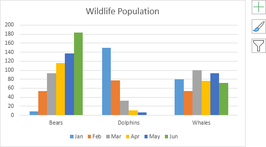
Posisi Legenda
Untuk memindahkan legenda ke sisi kanan Charts, lakukan langkah-langkah berikut.
1. Pilih grafik.
2. Klik tombol + di sisi kanan grafik, klik panah di sebelah Legenda dan klik Kanan.
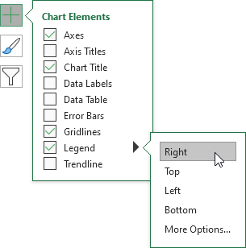
Hasil:

Label Data
Anda dapat menggunakan label data untuk memfokuskan perhatian pembaca Anda pada satu seri data atau titik data.
1. Pilih grafik.
2. Klik bilah hijau untuk memilih seri data Juni.
3. Tahan CTRL dan gunakan tombol panah untuk memilih populasi Lumba-lumba di bulan Juni (bilah hijau kecil).
4. Klik tombol + di sisi kanan grafik dan klik kotak centang di sebelah Label Data.
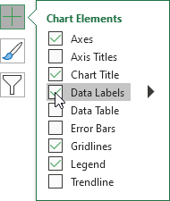
Hasil:

Charts Kolom
Charts kolom digunakan untuk membandingkan nilai di seluruh kategori dengan menggunakan batang vertikal. Untuk membuat Charts kolom, jalankan langkah-langkah berikut.
1. Pilih rentang A1:A7, tahan CTRL, dan pilih rentang C1:D7.
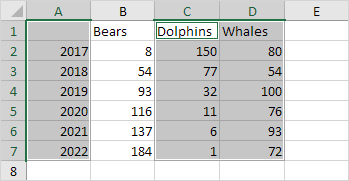
2. Pada tab Sisipkan, di grup Charts, klik simbol Kolom.

3. Klik Kolom Tergugus.
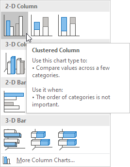
Hasil:
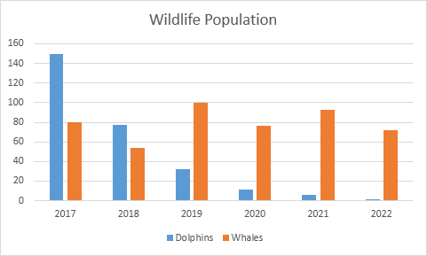
Catatan: hanya jika Anda memiliki label numerik, kosongkan sel A1 sebelum Anda membuat Charts kolom. Dengan melakukan ini, Excel tidak mengenali angka di kolom A sebagai seri data dan secara otomatis menempatkan angka-angka ini pada sumbu horizontal (kategori). Setelah membuat Charts, Anda dapat memasukkan teks Tahun ke sel A1 jika Anda mau.
Charts Garis (Line Chart)
Charts garis digunakan untuk menampilkan tren dari waktu ke waktu. Gunakan Charts garis jika Anda memiliki label teks, tanggal, atau beberapa label numerik pada sumbu horizontal. Gunakan plot sebar (Charts XY) untuk menampilkan data XY ilmiah. Untuk membuat diagram garis, lakukan langkah-langkah berikut.
1. Pilih rentang A1:D7.
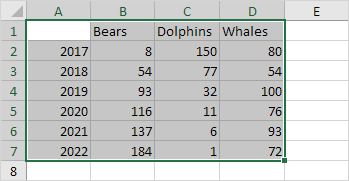
2. Pada tab Sisipkan, di grup Charts, klik simbol Garis.
3. Klik Garis dengan Penanda.
Hasil:

Catatan: hanya jika Anda memiliki label numerik, kosongkan sel A1 sebelum Anda membuat Charts garis. Dengan melakukan ini, Excel tidak mengenali angka di kolom A sebagai seri data dan secara otomatis menempatkan angka-angka ini pada sumbu horizontal (kategori). Setelah membuat Charts, Anda dapat memasukkan teks Tahun ke sel A1 jika Anda mau.
Mari kita sesuaikan diagram garis ini.
Untuk mengubah rentang data yang disertakan dalam Charts, jalankan langkah-langkah berikut.
4. Pilih diagram garis.
5. Pada tab Desain, dalam grup Data, klik Pilih Data.
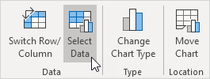
6. Hapus centang Dolphins and Whales dan klik OK.
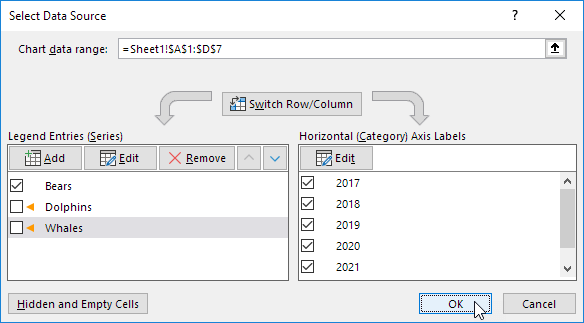
Hasil:
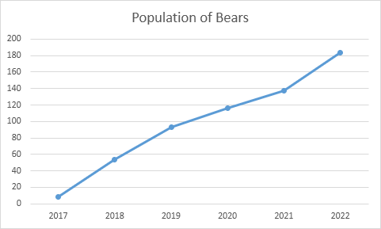
Untuk mengubah warna garis dan penanda, lakukan langkah-langkah berikut.
7. Klik kanan garis tersebut dan klik Format Data Series.
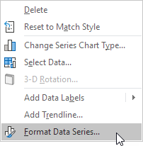
Panel Format Seri Data muncul.
8. Klik ikon ember cat dan ubah warna garis.
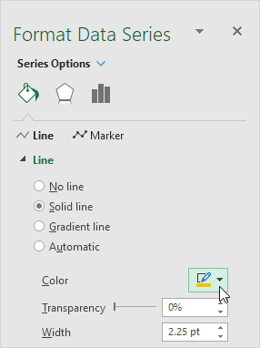
9. Klik Penanda dan ubah warna isian dan warna batas penanda.
Hasil:
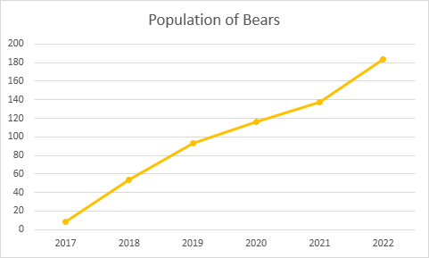
Untuk menambahkan garis tren, jalankan langkah-langkah berikut.
10. Pilih diagram garis.
11. Klik tombol + di sisi kanan grafik, klik panah di sebelah Garis Tren, lalu klik Opsi Lainnya.
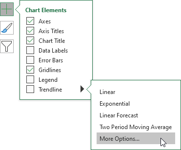
Panel Format Garis Tren muncul.
12. Pilih jenis Tren/Regresi. Klik Linier.
13. Tentukan jumlah periode yang akan disertakan dalam ramalan. Ketik 2 di kotak Teruskan.
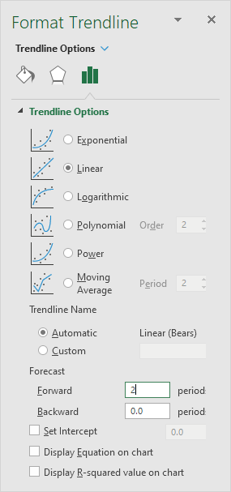
Hasil:
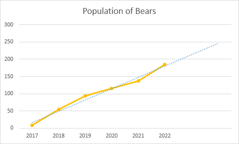
Untuk mengubah jenis sumbu ke sumbu Tanggal, jalankan langkah-langkah berikut.
14. Klik kanan sumbu horizontal, lalu klik Format Sumbu.
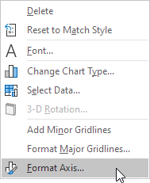
Panel Format Sumbu muncul.
15. Klik sumbu Tanggal.
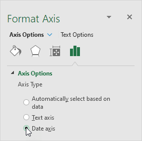
Hasil:
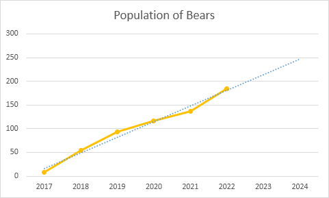
Kesimpulan: garis tren memprediksi populasi sekitar 250 beruang pada tahun 2024.
Pie Chart
Diagram lingkaran digunakan untuk menampilkan kontribusi setiap nilai (irisan) terhadap total (kue). Diagram lingkaran selalu menggunakan satu seri data.
Untuk membuat diagram lingkaran dari seri data 2017, jalankan langkah-langkah berikut.
1. Pilih rentang A1:D2.
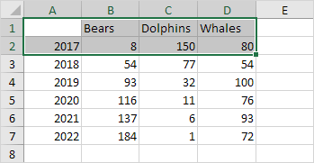
2. Pada tab Sisipkan, di grup Charts, klik simbol Pai.

3. Klik Pai.

Hasil:
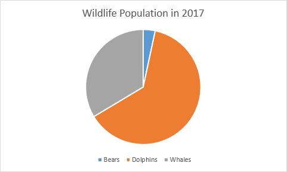
4. Klik pada pai untuk memilih seluruh pai. Klik pada irisan untuk menyeretnya menjauh dari tengah.
Hasil:
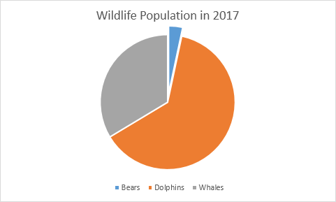
Catatan: hanya jika Anda memiliki label numerik, kosongkan sel A1 sebelum Anda membuat diagram lingkaran. Dengan melakukan ini, Excel tidak mengenali angka di kolom A sebagai seri data dan secara otomatis membuat Charts yang benar. Setelah membuat Charts, Anda dapat memasukkan teks Tahun ke sel A1 jika Anda mau.
Mari buat satu lagi diagram lingkaran keren.
5. Pilih rentang A1:D1, tahan CTRL dan pilih rentang A3:D3.
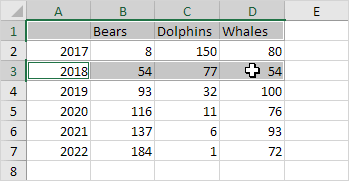
6. Buat diagram lingkaran (ulangi langkah 2-3).
7. Klik legenda di bagian bawah dan tekan Delete.
8. Pilih diagram lingkaran.
9. Klik tombol + di sisi kanan grafik dan klik kotak centang di sebelah Label Data.
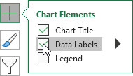
10. Klik ikon kuas di sisi kanan diagram dan ubah skema warna diagram lingkaran.
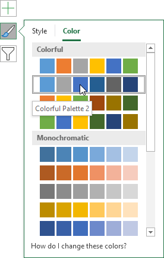
Hasil:

11. Klik kanan diagram lingkaran dan klik Format Data Labels.
12. Centang Nama Kategori, hapus centang Nilai, centang Persentase dan klik Pusat.
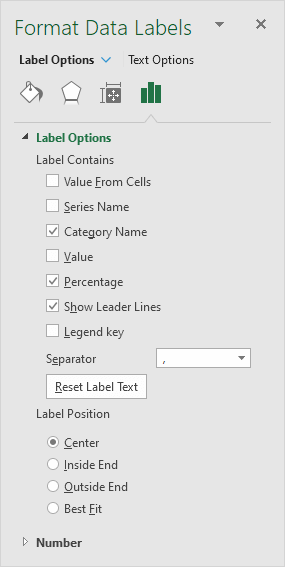
Hasil:

Catatan: klik kanan label data dan klik Font untuk mengubah ukuran font dan warna font label data.
Grafik Batang (Bar Chart)
Sebuah bar chart adalah versi horizontal Charts kolom. Gunakan diagram batang jika Anda memiliki label teks besar.
Untuk membuat diagram batang, lakukan langkah-langkah berikut.
1. Pilih rentang A1:B6.
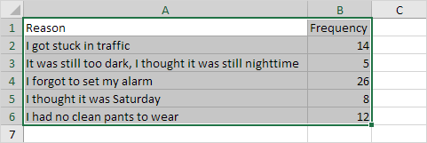
2. Pada tab Sisipkan, di grup Charts, klik simbol Kolom.
3. Klik Bilah Berkelompok.
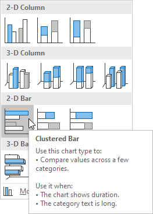
Hasil:
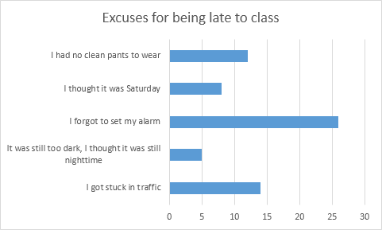
Charts Area
Sebuah grafik daerah adalah Charts sejalan dengan daerah di bawah garis penuh dengan warna. Gunakan Charts area bertumpuk untuk menampilkan kontribusi setiap nilai terhadap total dari waktu ke waktu.
Untuk membuat Charts area, jalankan langkah-langkah berikut.
1. Pilih rentang A1:D7.
2. Pada tab Sisipkan, di grup Charts, klik simbol Garis.
3. Klik Daerah.
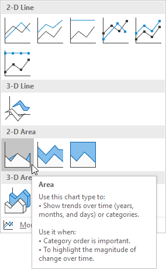
Hasil. Dalam contoh ini, beberapa area tumpang tindih.
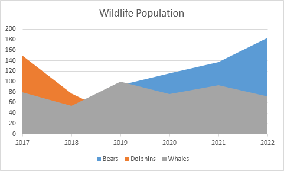
Di bawah ini Anda dapat menemukan Charts garis yang sesuai untuk melihat ini dengan jelas.
4. Ubah subtipe grafik menjadi Stacked Area (yang ada di sebelah Area).
Hasil:
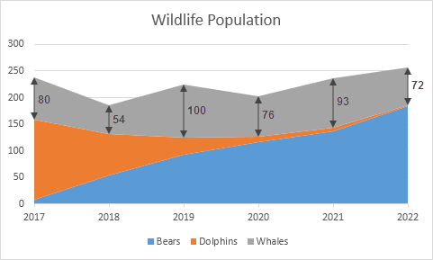
Catatan: hanya jika Anda memiliki label numerik, kosongkan sel A1 sebelum Anda membuat Charts area. Dengan melakukan ini, Excel tidak mengenali angka di kolom A sebagai seri data dan secara otomatis menempatkan angka-angka ini pada sumbu horizontal (kategori). Setelah membuat Charts, Anda dapat memasukkan teks Tahun ke sel A1 jika Anda mau.
Plot Scatter
Gunakan sebar plot ( XY chart ) untuk menampilkan data XY ilmiah. Scatter plot sering digunakan untuk mengetahui apakah ada hubungan antara variabel X dan Y.
Hanya Penanda
Untuk mengetahui apakah ada hubungan antara X (gaji seseorang) dan Y (harga mobilnya), lakukan langkah-langkah berikut.
1. Pilih rentang A1:B10.
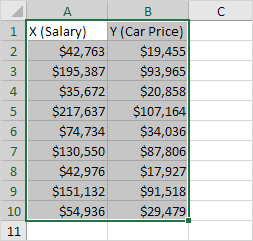
2. Pada tab Insert, di grup Charts, klik simbol Scatter.
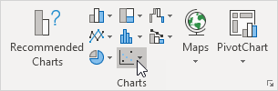
3. Klik Menyebarkan.
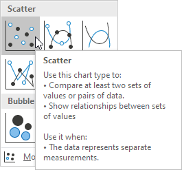
Hasil:
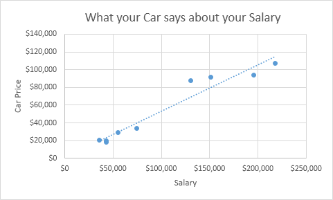
Catatan: kami menambahkan garis tren untuk melihat dengan jelas hubungan antara kedua variabel ini.
Garis lurus
Untuk membuat scatter plot dengan garis lurus, lakukan langkah-langkah berikut.
1. Pilih rentang A1:D22.
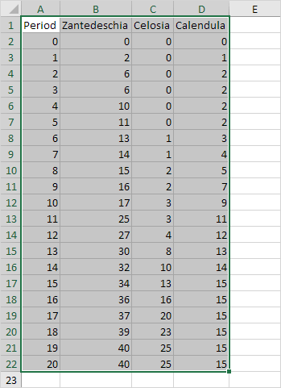
2. Pada tab Insert, di grup Charts, klik simbol Scatter.
3. Klik Scatter with Straight Lines.
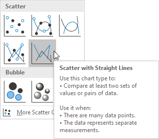
Catatan: lihat juga subtipe Scatter with Smooth Lines.
Hasil:
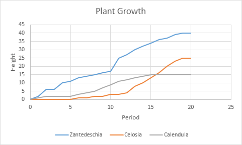
Catatan: kami menambahkan judul sumbu horizontal dan vertikal. Sumbu horizontal dari plot sebar adalah sumbu nilai, sehingga Anda memiliki lebih banyak opsi penskalaan sumbu (sama dengan sumbu vertikal yang selalu merupakan sumbu nilai).
Seri Data
Pilih Sumber Data | Beralih Baris/Kolom | Tambah, Edit, Hapus, dan Pindahkan
Baris atau kolom angka yang diplot dalam Charts disebut deret data. Anda dapat memplot satu atau beberapa seri data dalam Charts.
Untuk membuat Charts kolom, lakukan langkah-langkah berikut.
1. Pilih rentang A1:D7.
2. Pada tab Sisipkan, di grup Charts, klik simbol Kolom.
3. Klik Kolom Tergugus.
Hasil:
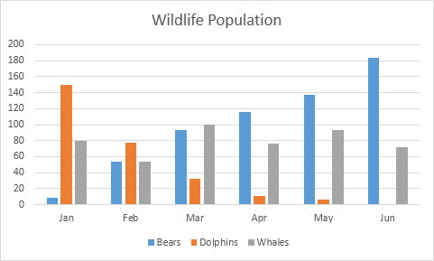
Pilih Sumber Data
Untuk meluncurkan kotak dialog Pilih Sumber Data, jalankan langkah-langkah berikut.
1. Pilih grafik. Klik kanan, lalu klik Pilih Data.

Kotak dialog Pilih Sumber Data muncul.
2. Anda dapat menemukan tiga seri data (Beruang, Lumba-lumba dan Paus) di sebelah kiri dan label sumbu horizontal (Jan, Feb, Mar, Apr, Mei dan Jun) di sebelah kanan.
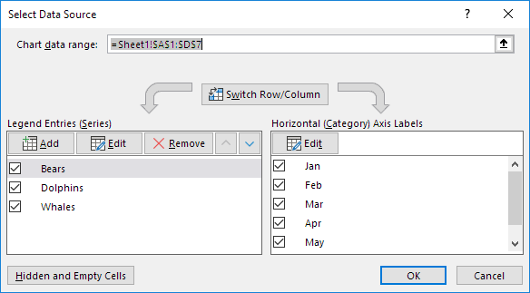
Beralih Baris/Kolom
Jika Anda mengklik Switch Row/Column, Anda akan memiliki 6 seri data (Jan, Feb, Mar, Apr, Mei dan Jun) dan tiga label sumbu horizontal (Beruang, Lumba-lumba dan Paus).
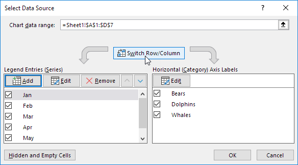
Hasil:

Tambah, Edit, Hapus, dan Pindahkan
Anda dapat menggunakan kotak dialog Pilih Sumber Data untuk menambahkan, mengedit, menghapus, dan memindahkan seri data, tetapi ada cara yang lebih cepat.
1. Pilih grafik.
2. Cukup ubah rentang pada lembar.
Hasil:

Axes (Sumbu)
Tipe Sumbu | Judul Sumbu | Skala Sumbu
Sebagian besar jenis Charts memiliki dua sumbu : sumbu horizontal (atau sumbu x) dan sumbu vertikal (atau sumbu y). Contoh ini mengajarkan Anda cara mengubah tipe sumbu, menambahkan judul sumbu, dan cara mengubah skala sumbu vertikal.
Untuk membuat Charts kolom, lakukan langkah-langkah berikut.
1. Pilih rentang A1:B7.

2. Pada tab Sisipkan, di grup Charts, klik simbol Kolom.
3. Klik Kolom Tergugus.
Hasil:
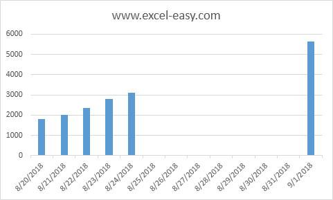
Tipe Sumbu
Excel juga menampilkan tanggal antara 24/8/2018 dan 1/9/2018. Untuk menghapus tanggal ini, ubah tipe sumbu dari sumbu tanggal ke sumbu teks.
1. Klik kanan sumbu horizontal, lalu klik Format Sumbu.
Panel Format Sumbu muncul.
2. Klik sumbu Teks.
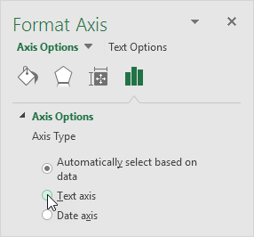
Hasil:

Judul Sumbu
Untuk menambahkan judul sumbu vertikal, jalankan langkah-langkah berikut.
1. Pilih grafik.
2. Klik tombol + di sisi kanan Charts, klik panah di sebelah Judul Sumbu, lalu klik kotak centang di sebelah Vertikal Utama.

3. Masukkan judul sumbu vertikal. Misalnya, Pengunjung.
Hasil:

Skala Sumbu
Secara default, Excel secara otomatis menentukan nilai pada sumbu vertikal. Untuk mengubah nilai-nilai ini, jalankan langkah-langkah berikut.
1. Klik kanan sumbu vertikal, lalu klik Format Sumbu.
Panel Format Sumbu muncul.
2. Perbaiki batas maksimum hingga 10.000.
3. Perbaiki unit utama ke 2000.
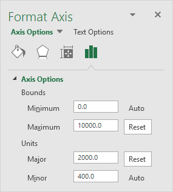
Hasil:
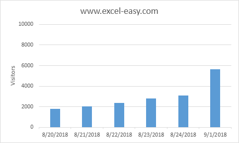
Lembar Charts (Chart Sheet)
Sejauh ini kita hanya melihat grafik pada lembar kerja yang sama dengan sumber data (grafik tertanam). Namun, Anda juga dapat memindahkan Charts ke lembar terpisah yang hanya berisi Charts ( lembar Charts ).
Untuk memindahkan Charts ke lembar Charts, lakukan langkah-langkah berikut.
1. Pilih grafik.
2. Pada tab Desain, dalam grup Lokasi, klik Pindahkan Charts.
Kotak dialog Pindahkan Charts muncul.
3. Klik Lembar baru dan masukkan nama.
4. Klik Oke.
Hasil:
Catatan: ulangi langkah-langkah ini, tetapi alih-alih Lembar baru di langkah 3, klik Objek di, untuk memindahkan Charts kembali ke lembar kerja yang sama dengan data sumber.
Trendline
Contoh ini mengajarkan Anda cara menambahkan Trendline ke Charts di Excel.
1. Pilih grafik.
2. Klik tombol + di sisi kanan Charts, klik panah di samping Trendline, lalu klik Opsi Lainnya.
Panel Format Trendline muncul.
3. Pilih jenis Tren/Regresi. Klik Linier.
4. Tentukan jumlah periode yang akan disertakan dalam ramalan. Ketik 3 di kotak Teruskan.
5. Centang "Tampilkan Persamaan pada grafik" dan "Tampilkan nilai R-kuadrat pada grafik".
Hasil:

Penjelasan: Excel menggunakan metode kuadrat terkecil untuk menemukan garis yang paling sesuai dengan titik-titiknya. Nilai R-kuadrat sama dengan 0,9295, yang merupakan kecocokan yang baik. Semakin mendekati 1, semakin baik garis tersebut sesuai dengan data. Garis tren memprediksi 120 batang Wonka yang terjual pada periode 13. Anda dapat memverifikasi ini dengan menggunakan persamaan. y = 7,7515 * 13 + 18,267 = 119.0365.
6. Alih-alih menggunakan persamaan ini, Anda dapat menggunakan fungsi FORECAST.LINEAR di Excel. Fungsi ini memprediksi nilai masa depan yang sama.
7. Fungsi FORECAST.ETS di Excel memprediksi nilai masa depan menggunakan Exponential Triple Smoothing, yang memperhitungkan musiman.

Tip: kunjungi halaman kami tentang perkiraan untuk mempelajari lebih lanjut tentang fungsi-fungsi ini.
Error Bars
Contoh ini mengajarkan Anda cara menambahkan bilah kesalahan ke Charts di Excel.
1. Pilih grafik.
2. Klik tombol + di sisi kanan Charts, klik panah di sebelah Error Bars, lalu klik Opsi Lainnya.
Perhatikan pintasan untuk menampilkan bilah kesalahan dengan cepat menggunakan Kesalahan Standar, nilai persentase 5% atau 1 standar deviasi.
Panel Format Error Bars muncul.
3. Pilih Arah. Klik Keduanya.
4. Pilih Gaya Akhir. Klik Batas.
5. Klik Nilai tetap dan masukkan nilai 10.
Hasil:
Catatan: jika Anda menambahkan bilah kesalahan ke plot sebar, Excel juga menambahkan bilah kesalahan horizontal. Dalam contoh ini, bilah kesalahan ini telah dihapus. Bilah kesalahan vertikal pada periode 1 memprediksi 10 hingga 30 batang Wonka yang terjual, bilah kesalahan vertikal pada periode 2 memprediksi 22 hingga 42 batang Wonka yang terjual, dll.
Sparkline
Sisipkan Grafik Mini | Sesuaikan Grafik Mini | Bandingkan Sparkline | Win/Loss Sparklines
Sparklines di Excel adalah grafik yang muat dalam satu sel. Sparkline sangat bagus untuk menampilkan tren.
Sisipkan Sparkline
Untuk menyisipkan grafik mini, jalankan langkah-langkah berikut.
1. Pilih sel di mana Anda ingin grafik mini muncul. Dalam contoh ini, kami memilih rentang G2:G4.
2. Pada tab Sisipkan, di grup Grafik Mini, klik Garis.
3. Klik pada kotak Data Range dan pilih range B2:F4.
4. Klik Oke.
Hasil:
5. Ubah nilai di sel F2 menjadi 1186.
Hasil. Excel secara otomatis memperbarui grafik mini.
Sesuaikan Sparkline
Untuk menyesuaikan grafik mini, jalankan langkah-langkah berikut.
1. Pilih grafik mini.
2. Pada tab Desain, di grup Perlihatkan, centang Titik Tinggi dan Titik Rendah.
Hasil:

Catatan: untuk membuat grafik mini lebih besar, cukup ubah tinggi baris dan lebar kolom sel grafik mini.
3. Pada tab Desain, di grup Gaya, pilih gaya visual yang bagus.
Hasil:

Catatan: titik tinggi berwarna hijau sekarang dan titik rendah berwarna merah.
Untuk menghapus grafik mini, jalankan langkah-langkah berikut.
4. Pilih 1 atau lebih grafik mini.
5. Pada tab Desain, dalam grup Grup, klik Hapus.
Bandingkan Sparklines
Secara default, setiap grafik mini memiliki skala vertikalnya sendiri. Nilai maksimum diplot di bagian atas sel. Nilai minimum diplot di bagian bawah sel.
Untuk membandingkan grafik mini, jalankan langkah-langkah berikut.
1. Pilih grafik mini.
2. Pada tab Desain, di grup Jenis, klik Kolom.
Hasil:
Catatan: semua bilah hijau memiliki tinggi yang sama, tetapi nilai maksimum (B2, E3, dan F4) berbeda!
3. Pilih grafik mini.
4. Pada tab Desain, dalam grup Grup, klik Sumbu.
5. Di bawah Opsi Nilai Minimum Sumbu Vertikal dan Opsi Nilai Maksimum Sumbu Vertikal, pilih Sama untuk Semua Grafik Mini.
Hasil:
Catatan: sekarang Anda dapat dengan jelas melihat bahwa penghasilan Jack jauh lebih tinggi.
Win/Loss Sparklines
Sparkline menang/kalah hanya menunjukkan apakah setiap nilai positif (menang) atau negatif (kalah). Terkadang ini bisa berguna.

Catatan: coba sendiri. Unduh file Excel dan pilih grafik mini. Selanjutnya, pada tab Desain, klik Kolom (bukan Menang/Kalah) untuk melihat dengan jelas seberapa tinggi dan rendah nilainya.
Charts Kombinasi (Combination Chart)
Sebuah grafik kombinasi adalah Charts yang menggabungkan dua atau lebih jenis grafik dalam grafik tunggal.
Untuk membuat Charts kombinasi, jalankan langkah-langkah berikut.
1. Pilih rentang A1:C13.
2. Pada tab Insert, di grup Charts, klik simbol Combo.

3. Klik Buat Charts Kombo Kustom.
Kotak dialog Sisipkan Charts muncul.
4. Untuk seri Rainy Days, pilih Clustered Column sebagai tipe grafik.
5. Untuk seri Profit, pilih Line sebagai tipe grafik.
6. Plot seri Profit pada sumbu sekunder.

7. Klik Oke.
Hasil:
Charts Pengukur (Gauge Chart)
Sebuah alat ukur grafik (atau grafik speedometer) menggabungkan grafik Donut dan grafik Pie di grafik tunggal. Jika Anda sedang terburu-buru, cukup unduh file Excel.
Seperti inilah tampilan spreadsheetnya.

Untuk membuat grafik pengukur, lakukan langkah-langkah berikut.
1. Pilih rentang H2:I6.
Catatan: seri Donat memiliki 4 titik data dan seri Pie memiliki 3 titik data.
2. Pada tab Insert, di grup Charts, klik simbol Combo.
3. Klik Buat Charts Kombo Kustom.
Kotak dialog Sisipkan Charts muncul.
4. Untuk seri Donut, pilih Donut (opsi keempat di bawah Pie) sebagai tipe Charts.
5. Untuk seri Pie, pilih Pie sebagai tipe grafik.
6. Plot seri Pie pada sumbu sekunder.
7. Klik Oke.
8. Hapus judul grafik dan legenda.
9. Pilih grafik. Pada tab Format, di grup Pilihan Saat Ini, pilih seri Pai.

10. Pada tab Format, di grup Current Selection, klik Format Selection dan ubah sudut irisan pertama menjadi 270 derajat.
11. Tahan CTRL dan gunakan tombol dan → untuk memilih satu titik data. Pada tab Format, dalam grup Gaya Bentuk, ubah Isi Bentuk setiap titik. Poin 1 = Tanpa Isi, poin 2 = hitam dan poin 3 = Tanpa Isi.
Hasil:

Penjelasan: Diagram lingkaran tidak lebih dari irisan transparan 75 poin, irisan hitam 1 titik (jarum) dan irisan transparan 124 poin.
12. Ulangi langkah 9 sampai 11 untuk seri Donat. Poin 1 = merah, poin 2 = kuning, poin 3 = hijau dan poin 4 = Tidak Ada Isi.
Hasil:

13. Pilih grafik. Pada tab Format, dalam grup Pilihan Saat Ini, pilih Area Charts. Dalam grup Shape Styles, ubah Shape Fill menjadi No fill dan Shape Outline menjadi No Outline.
14. Gunakan Tombol Putar untuk mengubah nilai di sel I3 dari 75 menjadi 76. Diagram lingkaran berubah menjadi irisan transparan 76 poin, irisan hitam 1 titik (jarum), dan irisan transparan 200 - 1 - 76 = 123 poin. Rumus di sel I5 memastikan bahwa 3 irisan berjumlah hingga 200 poin.
Charts Termometer
Contoh ini mengajarkan Anda cara membuat Charts termometer di Excel. Charts termometer menunjukkan kepada Anda berapa banyak tujuan yang telah dicapai.
Untuk membuat Charts termometer, lakukan langkah-langkah berikut.
1. Pilih sel B16.
Catatan: sel yang berdekatan harus kosong.
2. Pada tab Sisipkan, di grup Charts, klik simbol Kolom.
3. Klik Kolom Tergugus.
Hasil:
Lebih lanjut menyesuaikan grafik.
4. Hapus ubin Charts dan sumbu horizontal.
5. Klik kanan bar biru, klik Format Data Series dan ubah Gap Width menjadi 0%.
6. Ubah lebar grafik.
7. Klik kanan persentase pada grafik, klik Format Axis, perbaiki batas minimum ke 0, batas maksimum ke 1 dan atur jenis tanda centang Mayor ke Luar.
Hasil:
Gantt Chart
Excel tidak menawarkan Gantt sebagai tipe Charts, tetapi mudah untuk membuat Charts Gantt dengan menyesuaikan jenis Charts batang bertumpuk. Di bawah ini Anda dapat menemukan data Charts Gantt kami.
Untuk membuat Charts Gantt, jalankan langkah-langkah berikut.
1. Pilih rentang A3:C11.
2. Pada tab Sisipkan, di grup Charts, klik simbol Kolom.
3. Klik Batang Bertumpuk.
Hasil:
4. Masukkan judul dengan mengklik Judul Charts. Misalnya, Membangun Rumah.
5. Klik legenda di bagian bawah dan tekan Delete.
6. Tugas (Yayasan, Dinding, dll.) dalam urutan terbalik. Klik kanan tugas pada Charts, klik Format Sumbu dan centang 'Kategori dalam urutan terbalik'.
Hasil:
7. Klik kanan bilah biru, klik Format Data Series, ikon Fill & Line, Fill, No fill.
8. Tanggal dan waktu disimpan sebagai angka di Excel dan menghitung jumlah hari sejak 0, 1 Januari 1900. 1-jun-2017 (mulai) sama dengan 42887. 15-jul-2017 (akhir) sama dengan 42931 Klik kanan tanggal pada grafik, klik Format Axis dan perbaiki batas minimum ke 42887, batas maksimum ke 42931 dan Unit utama ke 7.
Hasil. Sebuah Gantt chart di Excel.
Perhatikan bahwa pekerjaan pipa dan listrik dapat dilakukan secara bersamaan.
Charts Pareto
Excel 2016 atau lebih baru | Semua versi
Contoh ini mengajarkan Anda cara membuat Charts Pareto di Excel. Prinsip Pareto menyatakan bahwa, untuk banyak peristiwa, kira-kira 80% efeknya berasal dari 20% penyebabnya. Dalam contoh ini, kita akan melihat bahwa sekitar 80% keluhan berasal dari 20% jenis keluhan.
Excel 2016 atau lebih baru
Untuk membuat Charts Pareto di Excel 2016 atau yang lebih baru, jalankan langkah-langkah berikut.
1. Pilih rentang A3:B13.

2. Pada tab Sisipkan, di grup Charts, klik simbol Histogram.
3. Klik Pareto.
Hasil:
Catatan: Charts Pareto menggabungkan Charts kolom dan grafik garis.
4. Masukkan judul Charts.
5. Klik tombol + di sisi kanan grafik dan klik kotak centang di sebelah Label Data.
Hasil:
Kesimpulan: garis Pareto oranye menunjukkan bahwa (789 + 621) / 1722 80% keluhan berasal dari 2 dari 10 = 20% dari jenis keluhan (Mahal dan Porsi Kecil). Dengan kata lain: prinsip Pareto berlaku.
Semua versi
Jika Anda tidak memiliki Excel 2016 atau yang lebih baru, cukup buat Charts Pareto dengan menggabungkan Charts kolom dan grafik garis. Metode ini bekerja dengan semua versi Excel.
1. Pertama, pilih nomor di kolom B.
2. Selanjutnya, urutkan data Anda dalam urutan menurun. Pada tab Data, dalam grup Urutkan & Filter, klik ZA.
3. Hitung jumlah kumulatif. Masukkan rumus yang ditunjukkan di bawah ini ke dalam sel C5 dan seret rumus ke bawah.

4. Hitung % kumulatif. Masukkan rumus yang ditunjukkan di bawah ini ke dalam sel D4 dan seret rumus ke bawah.
Catatan: sel C13 berisi jumlah total pengaduan. Saat kita menyeret rumus ini ke bawah, referensi absolut ($C$13) tetap sama, sedangkan referensi relatif (C4) berubah menjadi C5, C6, C7, dll.
5. Pilih data di kolom A, B dan D. Untuk mencapai ini, tahan CTRL dan pilih setiap rentang.

6. Pada tab Sisipkan, di grup Charts, klik simbol Kolom.
7. Klik Kolom Tergugus.
8. Klik kanan pada bar orange (Cumulative %) dan klik Change Series Chart Type...
Kotak dialog Ubah Tipe Charts muncul.
9. Untuk rangkaian % Kumulatif, pilih Garis dengan Penanda sebagai jenis Charts.
10. Plot deret % Kumulatif pada sumbu sekunder.
11. Klik Oke.
Catatan: Excel 2010 tidak menawarkan Charts kombo sebagai salah satu tipe Charts bawaan. Jika Anda menggunakan Excel 2010, alih-alih menjalankan langkah 8-10, cukup pilih Line with Markers dan klik OK. Selanjutnya, klik kanan pada garis oranye/merah dan klik Format Data Series. Pilih Sumbu Sekunder dan klik Tutup.
12. Klik kanan persentase pada grafik, klik Format Axis dan atur Maksimum ke 100.

Hasil:

Kesimpulan: Grafik Pareto menunjukkan bahwa 80% keluhan berasal dari 20% jenis keluhan (Overpriced dan Porsi Kecil). Dengan kata lain: prinsip Pareto berlaku.
Sisipkan Tabel Pivot | Tarik Bidang | Urutkan | Filter | Ubah Ringkasan Perhitungan | Tabel Pivot Dua Dimensi | Item Tabel Pivot Grup | Tabel Pivot Multi-level | Distribusi Frekuensi | Chart Pivot | Pemotong | Perbarui Tabel Pivot | Bidang/Item yang Dihitung | DapatkanPivotData
Tabel pivot adalah salah satu fitur Excel yang paling canggih. Tabel pivot memungkinkan Anda mengekstrak signifikansi dari kumpulan data yang besar dan terperinci.
Kumpulan data kami terdiri dari 213 record dan 6 field. ID Pesanan, Produk, Kategori, Jumlah, Tanggal dan Negara.

Sisipkan Tabel Pivot
Untuk menyisipkan tabel pivot, jalankan langkah-langkah berikut.
- Klik salah satu sel di dalam kumpulan data.
-
Pada tab Sisipkan, dalam grup Tabel, klik PivotTable.
Kotak dialog berikut muncul. Excel secara otomatis memilih data untuk Anda. Lokasi default untuk tabel pivot baru adalah Lembar Kerja Baru.
-
Klik Oke.
Tarik bidang
Panel PivotTable Fields muncul. Untuk mendapatkan jumlah total yang diekspor dari setiap produk, seret bidang berikut ke area yang berbeda.
- Bidang produk ke area Baris.
- Bidang jumlah ke area Nilai.
-
Bidang negara ke area Filter.
Di bawah ini Anda dapat menemukan tabel pivot. Pisang adalah produk ekspor utama kami. Begitulah mudahnya tabel pivot!.
Mengurutkan (Sort)
Untuk mendapatkan Pisang di bagian atas daftar, urutkan tabel pivot.
- Klik sel mana saja di dalam kolom Jumlah Jumlah.
-
2. Klik kanan dan klik Sort, Sort Largest to Smallest.

Hasil.
Filter
Karena kami menambahkan bidang Negara ke area Filter, kami dapat memfilter tabel pivot ini berdasarkan Negara. Misalnya, produk mana yang paling banyak kita ekspor ke Prancis?
Klik tarik-turun filter dan pilih Prancis.
Hasil. Apel adalah produk ekspor utama kami ke Prancis.
Catatan: Anda dapat menggunakan filter standar (segitiga di sebelah Label Baris) untuk hanya menampilkan jumlah produk tertentu.
Ubah Ringkasan Perhitungan
Secara default, Excel merangkum data Anda dengan menjumlahkan atau menghitung item. Untuk mengubah tipe perhitungan yang ingin Anda gunakan, jalankan langkah-langkah berikut.
- Klik sel mana saja di dalam kolom Jumlah Jumlah.
-
Klik kanan dan klik Pengaturan Bidang Nilai.
-
Pilih jenis perhitungan yang ingin Anda gunakan. Misalnya, klik Hitung.

-
Klik Oke.
Hasil. 16 dari 28 pesanan ke Prancis adalah pesanan 'Apple'.
Tabel Pivot Dua Dimensi
Jika Anda menyeret bidang ke area Baris dan area Kolom, Anda dapat membuat tabel pivot dua dimensi. Pertama, masukkan tabel pivot. Selanjutnya, untuk mendapatkan jumlah total yang diekspor ke setiap negara, dari setiap produk, seret bidang berikut ke area yang berbeda.
- Bidang negara ke area Baris.
- Bidang Produk ke area Kolom.
- Bidang jumlah ke area Nilai.
-
Bidang kategori ke area Filter.

Di bawah ini Anda dapat menemukan tabel pivot dua dimensi.

Untuk membandingkan angka-angka ini dengan mudah, buat Chart pivot dan terapkan filter. Mungkin ini satu langkah terlalu jauh untuk Anda pada tahap ini, tetapi ini menunjukkan kepada Anda salah satu dari banyak fitur tabel pivot hebat lainnya yang ditawarkan Excel.
Item Tabel Pivot Grup (Group Pivot Table Items)
Contoh ini mengajarkan Anda cara mengelompokkan item tabel pivot. Pelajari cara mengelompokkan produk dan cara mengelompokkan tanggal menurut kuartal.
Di bawah ini Anda dapat menemukan tabel pivot. Kembali ke Tabel Pivot untuk mempelajari cara membuat tabel pivot ini.
Produk Grup
Bidang Produk berisi 7 item. Apel, Pisang, Kacang, Brokoli, Wortel, Mangga dan Jeruk.
Untuk membuat dua grup, jalankan langkah-langkah berikut.
1. Di tabel pivot, pilih Apple and Banana.
2. Klik kanan dan klik Grup.

3. Di tabel pivot, pilih Kacang, Brokoli, Wortel, Mangga, dan Jeruk.
4. Klik kanan dan klik Grup.
Hasil:
Catatan: untuk mengubah nama grup (Grup1 atau Grup2), pilih nama, dan edit nama di bilah rumus. Untuk ungroup, pilih grup, klik kanan dan klik Ungroup.
5. Untuk menutup grup, klik tanda minus.
Kesimpulan: Apel dan Pisang (Grup1) memiliki total yang lebih tinggi dibandingkan semua produk lainnya (Grup2) secara bersama-sama.
Tanggal Grup
Untuk membuat tabel pivot di bawah ini, alih-alih bidang Produk, tambahkan bidang Tanggal ke area Baris. Bidang Tanggal berisi banyak item. 6-Jan, 7-Jan, 8-Jan, 10-Jan, 11-Jan, dll.
Untuk mengelompokkan tanggal ini menurut kuartal, lakukan langkah-langkah berikut.
1. Klik sel mana saja di dalam kolom dengan tanggal.
2. Klik kanan dan klik Grup.
3. Pilih Quarters dan klik OK.

Catatan: lihat juga opsi untuk mengelompokkan berdasarkan detik, menit, jam, dll.
Hasil:

Kesimpulan: Kuartal 2 adalah kuarter terbaik.
Tabel Pivot Multi-level (Multi-level Pivot Table)
Beberapa Bidang Baris | Beberapa Bidang Nilai | Beberapa Bidang Filter Laporan
Tidak apa-apa untuk menyeret lebih dari satu bidang ke area dalam tabel pivot. Kita akan melihat contoh beberapa bidang baris, beberapa bidang nilai dan beberapa bidang filter laporan.
Ingat, kumpulan data kami terdiri dari 213 record dan 6 field. ID Pesanan, Produk, Kategori, Jumlah, Tanggal dan Negara.
Beberapa Bidang Baris
Pertama, masukkan tabel pivot. Selanjutnya, seret bidang berikut ke area yang berbeda.
1. Bidang kategori dan bidang Negara ke area Baris.
2. Bidang jumlah ke area Nilai.
Di bawah ini Anda dapat menemukan tabel pivot multi-level.
Beberapa Bidang Nilai
Pertama, masukkan tabel pivot. Selanjutnya, seret bidang berikut ke area yang berbeda.
1. Bidang negara ke area Baris.
2. Bidang jumlah ke area Nilai (2x).
Catatan: jika Anda menyeret bidang Jumlah ke area Nilai untuk kedua kalinya, Excel juga akan mengisi area Kolom.
Tabel pivot:
3. Selanjutnya, klik sel mana saja di dalam kolom Sum of Amount2.
4. Klik kanan dan klik Pengaturan Bidang Nilai.

5. Masukkan Persentase untuk Nama Kustom.
6. Pada tab Show Values As, pilih % of Grand Total.
7. Klik Oke.
Hasil:
Beberapa Bidang Filter Laporan
Pertama, masukkan tabel pivot. Selanjutnya, seret bidang berikut ke area yang berbeda.
1. Order ID ke area Baris.
2. Bidang jumlah ke area Nilai.
3. Bidang negara dan bidang Produk ke area Filter.
4. Selanjutnya, pilih United Kingdom dari drop-down filter pertama dan Broccoli dari drop-down filter kedua.
Tabel pivot menunjukkan semua pesanan 'Brokoli' ke Inggris.
Distribusi Frekuensi (Distribusi Frekuensi)
Tahukah Anda bahwa Anda dapat menggunakan tabel pivot untuk membuat distribusi frekuensi dengan mudah di Excel ? Anda juga dapat menggunakan Analysis Toolpak untuk membuat histogram.
Ingat, kumpulan data kami terdiri dari 213 record dan 6 field. ID Pesanan, Produk, Kategori, Jumlah, Tanggal dan Negara.
Pertama, masukkan tabel pivot. Selanjutnya, seret bidang berikut ke area yang berbeda.
1. Bidang jumlah ke area Baris.
2. Bidang jumlah (atau bidang lainnya) ke area Nilai.
3. Klik sel mana saja di dalam kolom Jumlah Jumlah.
4. Klik kanan dan klik Pengaturan Bidang Nilai.
5. Pilih Hitung dan klik OK.
6. Selanjutnya, klik sel mana saja di dalam kolom dengan Label Baris.
7. Klik kanan dan klik Grup.
8. Masukkan 1 untuk Mulai dari, 10000 untuk Berakhir pada, dan 1000 untuk Oleh.
9. Klik Oke.

Hasil:

Untuk membandingkan angka-angka ini dengan mudah, buat Chart pivot.
10. Klik sel mana saja di dalam tabel pivot.
11. Pada tab Analisis, dalam grup Alat, klik PivotChart.

Kotak dialog Sisipkan Chart muncul.
12. Klik Oke.
Hasil:

Chart Pivot (Pivot Chart)
Sisipkan Chart Pivot | Filter Chart Pivot | Ubah Jenis Chart Pivot
Sebuah grafik poros adalah representasi visual dari poros meja di Excel. Chart pivot dan tabel pivot terhubung satu sama lain.
Di bawah ini Anda dapat menemukan tabel pivot dua dimensi. Kembali ke Tabel Pivot untuk mempelajari cara membuat tabel pivot ini.
Sisipkan Chart Pivot
Untuk menyisipkan grafik pivot, jalankan langkah-langkah berikut.
1. Klik sel mana saja di dalam tabel pivot.
2. Pada tab Analisis, dalam grup Alat, klik PivotChart.
Kotak dialog Sisipkan Chart muncul.
3. Klik Oke.
Di bawah ini Anda dapat menemukan grafik pivot. Chart pivot ini akan memukau dan mengesankan atasan Anda.
Catatan: setiap perubahan yang Anda buat pada Chart pivot segera tercermin di tabel pivot dan sebaliknya.
Filter Chart Pivot
Untuk memfilter Chart pivot ini, jalankan langkah-langkah berikut.
1. Gunakan filter standar (segitiga di sebelah Produk dan Negara). Misalnya, gunakan filter Negara untuk hanya menampilkan jumlah total setiap produk yang diekspor ke Amerika Serikat.
2. Hapus filter Negara.
3. Karena kami menambahkan bidang Kategori ke area Filter, kami dapat memfilter Chart pivot ini (dan tabel pivot) menurut Kategori. Misalnya, gunakan filter Kategori untuk hanya menampilkan sayuran yang diekspor ke setiap negara.
Ubah Jenis Chart Pivot
Anda dapat mengubah ke jenis Chart pivot yang berbeda kapan saja.
1. Pilih grafik.
2. Pada tab Desain, dalam grup Tipe, klik Ubah Tipe Chart.

3. Pilih Pai.
4. Klik Oke.
Hasil:
Catatan: diagram lingkaran selalu menggunakan satu seri data (dalam hal ini, Kacang). Untuk mendapatkan Chart pivot suatu negara, tukar data di atas sumbu. Pertama, pilih grafik. Selanjutnya, pada tab Desain, dalam grup Data, klik Alihkan Baris/Kolom.
Pemotong (Slicers)
Gunakan Slicers di Excel untuk memfilter tabel pivot dengan cepat dan mudah. Hubungkan beberapa Slicers ke beberapa tabel pivot untuk membuat laporan yang luar biasa.
Di bawah ini Anda dapat menemukan tabel pivot. Kembali ke Tabel Pivot untuk mempelajari cara membuat tabel pivot ini.
Untuk menyisipkan Slicers, jalankan langkah-langkah berikut.
1. Klik sel mana saja di dalam tabel pivot.
2. Pada tab Analisis, dalam grup Filter, klik Sisipkan Slicers.
3. Periksa Negara dan klik OK.

4. Klik Amerika Serikat untuk mengetahui produk mana yang paling banyak kami ekspor ke Amerika Serikat.
Kesimpulan: pisang adalah produk ekspor utama kami ke Amerika Serikat. Filter laporan (sel B1) berubah menjadi Amerika Serikat.
Oke, itu cukup mudah. Mari kita masukkan alat pengiris kedua.
5. Klik sel mana saja di dalam tabel pivot.
6. Pada tab Analisis, dalam grup Filter, klik Sisipkan Slicers.
7. Periksa Produk dan klik OK.
8. Pilih Slicers.
9. Pada tab Options, dalam grup Slicer Styles, klik salah satu gaya slicer.
10. Gunakan alat pengiris kedua. Klik tombol Multi-Pilih untuk memilih beberapa produk.

Catatan: daripada menggunakan tombol Multi-Pilih, tahan CTRL untuk memilih beberapa item.
Untuk benar-benar membuat atasan Anda terkesan, lakukan langkah-langkah berikut.
11. Masukkan tabel pivot kedua.
Untuk menghubungkan kedua Slicers ke tabel pivot ini, jalankan langkah-langkah berikut.
12. Pilih Slicers pertama.
13. Pada tab Options, dalam grup Slicer, klik Report Connections.
14. Pilih tabel pivot kedua dan klik OK.
15. Ulangi langkah 12-14 untuk Slicers kedua.
16. Gunakan kedua alat pengiris.
Kesimpulan: jumlah total apel yang diekspor ke Kanada sama dengan $24.867 (6 pesanan) dan jumlah total jeruk yang diekspor ke Kanada sama dengan $19.929 (3 pesanan).
17. Klik ikon di sudut kanan atas Slicers untuk menghapus filter.

Catatan: kami tidak mengekspor kacang atau wortel ke Kanada. Cobalah sendiri, unduh file Excel dan gunakan Slicers untuk membuat laporan yang luar biasa.
Perbarui Tabel Pivot (Update Pivot Table)
Setiap perubahan yang Anda buat pada kumpulan data tidak secara otomatis diambil oleh tabel pivot. Muat ulang tabel pivot atau ubah sumber data untuk memperbarui tabel pivot dengan perubahan yang diterapkan.
Menyegarkan
Jika Anda mengubah teks atau angka apa pun dalam kumpulan data, Anda perlu menyegarkan tabel pivot.
1. Klik sel mana saja di dalam tabel pivot.
2. Klik kanan dan klik Segarkan.
Ubah Sumber Data
Jika Anda mengubah ukuran kumpulan data dengan menambahkan atau menghapus baris/kolom, Anda perlu memperbarui data sumber untuk tabel pivot.
1. Klik sel mana saja di dalam tabel pivot.
2. Pada tab Analisis, dalam grup Data, klik Ubah Sumber Data.
Tips: ubah kumpulan data Anda menjadi tabel sebelum Anda menyisipkan tabel pivot. Dengan cara ini sumber data Anda akan diperbarui secara otomatis saat Anda menambahkan atau menghapus baris/kolom. Hal ini dapat menghemat waktu. Anda masih harus menyegarkan.
Bidang/Item yang Dihitung (Calculated Field/Item)
unduh file calculated-field.xlsx unduh file calculated-item.xlsx
Bidang Hitung | Item yang Dihitung
Contoh ini mengajarkan Anda cara menyisipkan bidang terhitung atau item terhitung dalam tabel pivot.
Di bawah ini Anda dapat menemukan tabel pivot. Kembali ke Tabel Pivot untuk mempelajari cara membuat tabel pivot ini.
Bidang terhitung
Bidang terhitung menggunakan nilai dari bidang lain. Untuk menyisipkan bidang terhitung, jalankan langkah-langkah berikut.
1. Klik sel mana saja di dalam tabel pivot.
2. Pada tab Analisis, dalam grup Perhitungan, klik Bidang, Item & Set.
3. Klik Bidang Terhitung.
Kotak dialog Sisipkan Bidang Terhitung muncul.
4. Masukkan Pajak untuk Nama.
5. Ketik rumus =IF(Amount>100000, 3%*Amount, 0)
6. Klik Tambah.
Catatan: gunakan tombol Sisipkan Bidang untuk menyisipkan bidang dengan cepat saat Anda mengetikkan rumus. Untuk menghapus bidang terhitung, pilih bidang dan klik Hapus (di bawah Tambah).
7. Klik Oke.
Excel secara otomatis menambahkan bidang Pajak ke area Nilai.
Hasil:

Item yang Dihitung
Item terhitung menggunakan nilai dari item lain. Untuk menyisipkan item terhitung, jalankan langkah-langkah berikut.
1. Klik Negara mana saja di tabel pivot.
2. Pada tab Analisis, dalam grup Perhitungan, klik Bidang, Item & Set.
3. Klik Item Terhitung.
Kotak dialog Sisipkan Item Terhitung muncul.
4. Masukkan Oseania untuk Nama.
5. Ketik rumus =3%*(Australia+'Selandia Baru')
6. Klik Tambah.
Catatan: gunakan tombol Sisipkan Item untuk menyisipkan item dengan cepat saat Anda mengetikkan rumus. Untuk menghapus item terhitung, pilih item dan klik Hapus (di bawah Tambah).
7. Ulangi langkah 4 sampai 6 untuk Amerika Utara (Kanada dan Amerika Serikat) dan Eropa (Prancis, Jerman dan Inggris) dengan tarif pajak masing-masing 4% dan 5%.
8. Klik Oke.
Hasil:

Catatan: kami membuat dua grup (Penjualan dan Pajak).
DapatkanPivotData (GetPivotData)
Untuk memasukkan fungsi GETPIVOTDATA dengan cepat di Excel, ketik tanda sama dengan (=) dan klik sel di tabel pivot. Fungsi GETPIVOTDATA bisa sangat berguna.
1. Pertama, pilih sel B14 di bawah dan ketik =D7 (tanpa mengklik sel D7 di tabel pivot) untuk merujuk jumlah biji yang diekspor ke Prancis.
2. Gunakan filter untuk hanya menampilkan jumlah sayuran yang diekspor ke setiap negara.
Catatan: sel B14 sekarang merujuk pada jumlah wortel yang diekspor ke Prancis, bukan jumlah kacang. GETPIVOTDATA untuk menyelamatkan!.
3. Lepaskan filternya. Pilih sel B14 lagi, ketik tanda sama dengan (=) dan klik sel D7 di tabel pivot.
Catatan: Excel secara otomatis memasukkan fungsi GETPIVOTDATA yang ditunjukkan di atas.
4. Sekali lagi, gunakan filter untuk hanya menampilkan jumlah sayuran yang diekspor ke setiap negara.
Catatan: fungsi GETPIVOTDATA mengembalikan jumlah biji kopi yang diekspor ke Prancis dengan benar.
5. Fungsi GETPIVOTDATA hanya dapat mengembalikan data yang terlihat. Misalnya, gunakan filter untuk hanya menampilkan jumlah buah yang diekspor ke setiap negara.
Catatan: fungsi GETPIVOTDATA mengembalikan #REF! error karena nilai 680 (kacang ke Prancis) tidak terlihat.
6. Fungsi GETPIVOTDATA dinamis di bawah ini mengembalikan jumlah mangga yang diekspor ke Kanada.

Catatan: fungsi GETPIVOTDATA ini memiliki 6 argumen (bidang data, referensi ke sel mana pun di dalam tabel pivot dan 2 pasangan bidang/item). Buat daftar drop-down di sel B14 dan sel B15 untuk memilih item pertama dan kedua dengan cepat (lihat file Excel yang dapat diunduh).
7. Fungsi GETPIVOTDATA di bawah ini memiliki 4 argumen (bidang data, referensi ke sel mana pun di dalam tabel pivot dan 1 bidang/pasangan item) dan mengembalikan jumlah total yang diekspor ke AS.

8. Jika jumlah total yang diekspor ke AS berubah (misalnya, dengan menggunakan filter), nilai yang dikembalikan oleh fungsi GETPIVOTDATA juga berubah.

Jika Anda tidak ingin Excel secara otomatis menyisipkan fungsi GETPIVOTDATA, Anda dapat menonaktifkan fitur ini.
9. Klik sel mana saja di dalam tabel pivot.
10. Pada tab Analisis, dalam grup PivotTable, klik panah tarik-turun di samping Opsi dan hapus centang Hasilkan GetPivotData.

Menyisipkan Tabel | Mengurutkan Tabel | Memfilter Tabel | Baris Total | Referensi Terstruktur | Gaya Tabel | Analisis Cepat
Menyisipkan Tabel
Untuk menyisipkan tabel, lakukan langkah-langkah berikut.
-
Klik salah satu sel di dalam kumpulan data.

-
Pada tab Sisipkan, dalam grup Tabel, klik Tabel.

-
Excel secara otomatis memilih data untuk Anda. Centang 'My table has headers' dan klik OK.
Hasil. Excel membuat tabel yang diformat dengan baik untuk Anda. Ini mungkin masih tampak seperti rentang data normal bagi Anda, tetapi banyak fitur canggih sekarang hanya dengan satu klik tombol.

Mengurutkan Tabel
Untuk mengurutkan berdasarkan Nama Belakang pertama dan Penjualan kedua, jalankan langkah-langkah berikut.
- Klik panah di sebelah Penjualan dan klik Urutkan Terkecil ke Terbesar.
-
Klik panah di sebelah Nama Belakang dan klik Urutkan A hingga Z.
Hasil.
Memfilter Tabel
Untuk memfilter tabel, jalankan langkah-langkah berikut.
Klik panah di sebelah Negara dan hanya centang AS.
Hasil.
Baris Total
Untuk menampilkan baris total di akhir tabel, jalankan langkah-langkah berikut.
-
Pertama, pilih sel di dalam tabel. Selanjutnya pada tab Design, pada grup Table Style Options, centang Total Row.
Hasil.
-
Klik sel mana saja di baris terakhir untuk menghitung Total (Rata-rata, Hitung, Maks, Min, Jumlah, dll.) dari sebuah kolom. Misalnya, hitung jumlah kolom Penjualan.
Catatan: di bilah rumus, lihat bagaimana Excel menggunakan fungsi SUBTOTAL untuk menghitung jumlah. 109 adalah argumen untuk Sum jika Anda menggunakan fungsi SUBTOTAL. Excel menggunakan fungsi ini (dan bukan fungsi SUM standar) untuk menghitung total tabel dari tabel yang difilter dengan benar.
Referensi Terstruktur
Saat bekerja dengan tabel di Excel, Anda bisa menggunakan referensi terstruktur untuk membuat rumus Anda lebih mudah dipahami.
Sebagai contoh, kita memiliki tabel berikut.
-
Pilih sel E1, ketik Bonus, dan tekan Enter. Excel secara otomatis memformat kolom untuk Anda.
- Pilih sel E2 dan ketik =0.02*[
-
Daftar referensi terstruktur (kolom) muncul. Pilih Penjualan dari daftar.
-
Tutup dengan tanda kurung siku dan tekan Enter.
Hasil. Excel secara otomatis menyalin rumus ke bawah kolom untuk Anda.
Catatan: klik Opsi Koreksi Otomatis dan klik Batalkan Kolom Terhitung untuk hanya menyisipkan rumus ke dalam sel E2.
Untuk merujuk ke tabel ini dalam rumus, jalankan langkah-langkah berikut.
-
Pertama, pilih sel di dalam tabel. Selanjutnya pada tab Design, pada grup Properties, kita dapat melihat bahwa Table1 adalah nama dari tabel ini.
-
Pilih sel E18 dan masukkan rumus yang ditunjukkan di bawah ini.
Penjelasan: rumus ini menghitung jumlah kolom Penjualan. Masukkan =SUM(Table1[ dan Excel akan memberi Anda daftar referensi terstruktur yang dapat Anda gunakan. Rumus ini diperbarui secara otomatis saat Anda menambahkan atau menghapus catatan.
Table Styles
Memformat rentang sel dengan cepat dengan memilih Table Syle. Anda juga dapat membuat Table Syle Anda sendiri. Memformat sel dengan cepat dengan memilih gaya sel.
-
Klik salah satu sel di dalam kumpulan data.
-
Pada tab Beranda, dalam grup Gaya, klik Format sebagai Tabel.
-
Pilih Table Syle.
Catatan: klik Table Syle Baru untuk membuat Table Syle Anda sendiri atau klik kanan Table Syle dan klik Duplikat untuk membuat Table Syle baru yang serupa dengan yang sudah ada. Mengubah Table Syle kustom memengaruhi semua tabel dalam buku kerja yang menggunakan Table Syle tersebut. Ini dapat menghemat banyak waktu.
-
Excel secara otomatis memilih data untuk Anda. Centang 'My table has headers' dan klik OK.
Hasil. Ini adalah cara lain untuk menyisipkan tabel.
Untuk mengonversi tabel ini kembali ke rentang sel normal (dan mempertahankan pemformatan), jalankan langkah-langkah berikut.
-
Pertama, pilih sel di dalam tabel. Selanjutnya, pada tab Design, di grup Tools, klik Convert to Range.
Hasil. Rentang sel yang diformat dengan baik.
Catatan: untuk menghapus Table Syle, pilih rentang sel, pada tab Beranda, dalam grup Gaya, klik Normal.
Analisis Cepat
Total | Tabel | Memformat | Chart | Sparkline
Gunakan alat Analisis Cepat di Excel untuk menganalisis data Anda dengan cepat. Hitung total dengan cepat, sisipkan tabel dengan cepat, terapkan pemformatan bersyarat dengan cepat, dan banyak lagi.
Total
Alih-alih menampilkan baris total di akhir tabel Excel, gunakan alat Analisis Cepat untuk menghitung total dengan cepat.
-
Pilih rentang sel dan klik tombol Analisis Cepat.

-
Misalnya, klik Total dan klik Sum untuk menjumlahkan angka di setiap kolom.

Hasil:

-
Pilih rentang A1:D7 dan tambahkan kolom dengan total berjalan.
Catatan: total baris berwarna biru dan total kolom berwarna kuning-oranye.
Tabel
Gunakan tabel di Excel untuk mengurutkan, memfilter, dan meringkas data. Tabel pivot di Excel memungkinkan Anda mengekstrak signifikansi dari kumpulan data yang besar dan terperinci.
-
Pilih rentang sel dan klik tombol Analisis Cepat.
-
Untuk menyisipkan tabel dengan cepat, klik Tabel dan klik Tabel.
- Unduh file Excel (sisi kanan halaman ini) dan buka lembar kedua.
-
Klik salah satu sel di dalam kumpulan data.

- Tekan Ctrl+Q. Pintasan ini memilih seluruh kumpulan data dan membuka alat Analisis Cepat.
-
Untuk menyisipkan tabel pivot dengan cepat, klik Tabel dan klik salah satu contoh tabel pivot.
Catatan: tabel pivot adalah salah satu fitur Excel yang paling canggih. Kunjungi halaman kami tentang Tabel Pivot untuk mempelajari lebih lanjut tentang topik ini.
Memformat
Bilah data, skala warna, dan kumpulan ikon di Excel membuatnya sangat mudah untuk memvisualisasikan nilai dalam rentang sel.
-
Pilih rentang sel dan klik tombol Analisis Cepat.
-
Untuk menambahkan bilah data dengan cepat, klik Bilah Data.
Catatan: bilah yang lebih panjang menunjukkan nilai yang lebih tinggi. Kunjungi halaman kami tentang Data Bar untuk mempelajari lebih lanjut tentang topik ini.
-
Untuk menambahkan skala warna dengan cepat, klik Skala Warna.

Catatan: bayangan warna mewakili nilai dalam sel. Kunjungi halaman kami tentang Color Scales untuk mempelajari lebih lanjut tentang topik ini.
-
Untuk menambahkan kumpulan ikon dengan cepat, klik Kumpulan Ikon.
Catatan: setiap ikon mewakili rentang nilai. Kunjungi halaman kami tentang Kumpulan Ikon untuk mempelajari lebih lanjut tentang topik ini.
-
Untuk menyorot sel yang lebih besar dari nilai dengan cepat, klik Lebih Besar Dari.

-
Masukkan nilai 100 dan pilih gaya pemformatan.
-
Klik Oke.
Hasil. Excel menyoroti sel yang lebih besar dari 100.

Chart
Anda dapat menggunakan alat Analisis Cepat untuk membuat Chart dengan cepat. Fitur Chart yang Direkomendasikan menganalisis data Anda dan menyarankan Chart yang berguna.
-
Pilih rentang sel dan klik tombol Analisis Cepat.
-
Misalnya, klik Chart dan klik Clustered Column untuk membuat Chart Clustered Column.
Sparkline
Sparklines di Excel adalah grafik yang muat dalam satu sel. Sparkline sangat bagus untuk menampilkan tren.
- Unduh file Excel (sisi kanan halaman ini) dan buka lembar ketiga.
-
Pilih rentang A1:F4 dan klik tombol Analisis Cepat.

-
Misalnya, klik Sparklines dan klik Line untuk menyisipkan grafik mini.

Hasil yang disesuaikan:

Buat Skenario Berbeda | Ringkasan Skenario | Goal Seek | Tabel Data | Pencarian Tujuan (Goal Seek) | Persamaan Kuadrat
What-If Analysis di Excel memungkinkan Anda mencoba nilai (skenario) yang berbeda untuk rumus. Contoh berikut membantu Anda menguasai What-If Analysis dengan cepat dan mudah.
Asumsikan Anda memiliki toko buku dan memiliki 100 buku di gudang. Anda menjual % tertentu untuk harga tertinggi $50 dan % tertentu untuk harga lebih rendah $20.
Jika Anda menjual 60% dengan harga tertinggi, sel D10 menghitung total keuntungan 60 * $50 + 40 * $20 = $3800.
Buat Skenario Berbeda
Tetapi bagaimana jika Anda menjual 70% dengan harga tertinggi? Dan bagaimana jika Anda menjual 80% dengan harga tertinggi? Atau 90%, atau bahkan 100%? Setiap persentase yang berbeda adalah skenario yang berbeda. Anda dapat menggunakan Manajer Skenario untuk membuat skenario ini.
Catatan: Anda cukup mengetikkan persentase yang berbeda ke dalam sel C4 untuk melihat hasil yang sesuai dari skenario di sel D10. Namun, What-If Analysis memungkinkan Anda membandingkan hasil skenario yang berbeda dengan mudah. Baca terus.
-
Pada tab Data, dalam grup Forecast, klik What-If Analysis.

-
Klik Scenario Manager.
Kotak dialog Scenario Manager muncul.
-
Tambahkan skenario dengan mengklik Add.
-
Ketik nama (60% tertinggi), pilih sel C4 (% dijual untuk harga tertinggi) untuk Mengubah sel dan klik OK.

-
Masukkan nilai yang sesuai 0,6 dan klik OK lagi.
-
Selanjutnya, tambahkan 4 skenario lainnya (70%, 80%, 90% dan 100%).
Terakhir, Scenario Manager Anda harus konsisten dengan gambar di bawah ini:

Catatan: untuk melihat hasil skenario, pilih skenario dan klik tombol Show. Excel akan mengubah nilai sel C4 agar Anda dapat melihat hasil yang sesuai pada lembar.
Ringkasan Skenario (Scenario Summary)
Untuk membandingkan hasil skenario ini dengan mudah, jalankan langkah-langkah berikut.
- Klik tombol Summary di Scenario Manager.
-
Selanjutnya, pilih sel D10 (keuntungan total) untuk sel hasil dan klik OK.
Hasil:
Kesimpulan: jika Anda menjual 70% untuk harga tertinggi, Anda memperoleh total keuntungan $4100, jika Anda menjual 80% untuk harga tertinggi, Anda memperoleh total keuntungan $4400, dst. Begitulah cara mudah analisis what-if di Excel menjadi.
Pencarian Tujuan (Goal Seek)
Bagaimana jika Anda ingin mengetahui berapa banyak buku yang harus Anda jual dengan harga tertinggi, untuk memperoleh keuntungan total tepat $4700? Anda dapat menggunakan fitur Goal Seek Excel untuk menemukan jawabannya.
-
Pada Data tab, dalam grup Forecast, klik What-If Analysis.
-
Klik Goal Seek.
Kotak dialog Goal Seek muncul.
- Pilih sel D10.
- Klik di kotak 'To value' dan ketik 4700.
- Klik di kotak 'By changing cell' dan pilih sel C4.
-
Klik Oke.

Hasil. Anda harus menjual 90% buku dengan harga tertinggi untuk mendapatkan total keuntungan persis $4700.
Tabel Data
Tabel Data Satu Variabel | Tabel Data Dua Variabel
Alih-alih membuat skenario yang berbeda, Anda dapat membuat tabel data untuk mencoba nilai yang berbeda untuk rumus dengan cepat. Anda dapat membuat tabel data satu variabel atau tabel data dua variabel.
Asumsikan Anda memiliki toko buku dan memiliki 100 buku di gudang. Anda menjual % tertentu untuk harga tertinggi $50 dan % tertentu untuk harga lebih rendah $20. Jika Anda menjual 60% untuk harga tertinggi, sel D10 di bawah menghitung total keuntungan 60 * $50 + 40 * $20 = $3800.
Tabel Data Satu Variabel
Untuk membuat tabel data satu variabel, jalankan langkah-langkah berikut.
- Pilih sel B12 dan ketik =D10 (lihat sel total keuntungan).
- Ketik persentase yang berbeda di kolom A.
-
Pilih rentang A12:B17.
Kami akan menghitung total keuntungan jika Anda menjual 60% untuk harga tertinggi, 70% untuk harga tertinggi, dll.
-
Pada tab Data, dalam grup Forecast, klik What-If Analysis.
-
Klik Data Table.
-
Klik di kotak 'Column input cell' (persentase ada di kolom) dan pilih sel C4.
Kami memilih sel C4 karena persentase merujuk ke sel C4 (% dijual dengan harga tertinggi). Bersama dengan rumus di sel B12, Excel sekarang tahu bahwa ia harus mengganti sel C4 dengan 60% untuk menghitung total keuntungan, mengganti sel C4 dengan 70% untuk menghitung total keuntungan, dll.
Catatan: ini adalah tabel data satu variabel jadi kami membiarkan sel input Baris kosong.
-
Klik Oke.
Hasil.

Kesimpulan: jika Anda menjual 60% untuk harga tertinggi, Anda memperoleh total keuntungan $3800, jika Anda menjual 70% untuk harga tertinggi, Anda memperoleh total keuntungan $4100, dst.
Catatan: bilah rumus menunjukkan bahwa sel berisi rumus larik. Oleh karena itu, Anda tidak dapat menghapus satu hasil pun. Untuk menghapus hasil, pilih rentang B13:B17 dan tekan Hapus.
Tabel Data Dua Variabel
Untuk membuat tabel data dua variabel, jalankan langkah-langkah berikut.
- Pilih sel A12 dan ketik =D10 (lihat sel total keuntungan).
- Ketik keuntungan unit yang berbeda (harga tertinggi) di baris 12.
- Ketik persentase yang berbeda di kolom A.
-
Pilih rentang A12:D17.
Kita akan menghitung total keuntungan untuk berbagai kombinasi 'laba satuan (harga tertinggi)' dan '% terjual untuk harga tertinggi' ('unit profit (highest price)' dan '% sold for the highest price').
-
Pada tab Data, dalam grup Forecast, klik What-If Analysis.
-
Klik Tabel Data.
- Klik pada kotak 'Row input cell' (unit profit berada dalam satu baris) dan pilih cell D7.
-
Klik di kotak 'Column input cell' (persentase ada di kolom) dan pilih sel C4.
Kami memilih sel D7 karena keuntungan unit merujuk ke sel D7. Kami memilih sel C4 karena persentase merujuk ke sel C4. Bersama dengan rumus di sel A12, Excel sekarang tahu bahwa ia harus mengganti sel D7 dengan $50 dan sel C4 dengan 60% untuk menghitung total keuntungan, mengganti sel D7 dengan $50 dan sel C4 dengan 70% untuk menghitung total keuntungan, dll.
-
Klik Oke.
Hasil.
Kesimpulan: jika Anda menjual 60% untuk harga tertinggi, dengan keuntungan per unit $50, Anda memperoleh keuntungan total $3800, jika Anda menjual 80% untuk harga tertinggi, dengan keuntungan unit $60, Anda memperoleh total keuntungan sebesar $5200, dll.
Catatan: bilah rumus menunjukkan bahwa sel berisi rumus larik. Oleh karena itu, Anda tidak dapat menghapus satu hasil pun. Untuk menghapus hasil, pilih rentang B13:D17 dan tekan Delete.
Pencarian Tujuan (Goal Seek)
Contoh Goal Seek 1 | Contoh Goal Seek 2 | Ketepatan Goal Seek | Lebih lanjut tentang Goal Seek
Jika Anda mengetahui hasil yang Anda inginkan dari rumus, gunakan Goal Seek di Excel untuk menemukan nilai input yang menghasilkan hasil rumus ini.
Contoh Goal Seek 1
Gunakan Goal Seek di Excel untuk menemukan nilai pada ujian keempat yang menghasilkan nilai akhir 70.
-
Rumus di sel B7 menghitung nilai akhir.
-
Nilai pada ujian keempat di sel B5 adalah sel input.

-
Pada tab Data, dalam grup Forecast, klik What-If Analysis.
-
Klik Goal Seek.
Tampil Kotak dialog Goal Seek.
- Pilih sel B7.
- Klik pada kotak 'To value' dan ketik 70.
- Klik di kotak 'By changing cell' dan pilih sel B5.
-
Klik Oke.

Hasil. Nilai 90 pada ujian keempat menghasilkan nilai akhir 70.
Contoh Goal Seek 2
Gunakan Goal Seek di Excel untuk menemukan jumlah pinjaman yang menghasilkan pembayaran bulanan $1500.
-
Rumus di sel B5 menghitung pembayaran bulanan.
Penjelasan: fungsi PMT menghitung pembayaran pinjaman. Jika Anda belum pernah mendengar fungsi ini sebelumnya, tidak apa-apa. Semakin tinggi jumlah pinjaman, semakin tinggi pembayaran bulanan. Asumsikan, Anda hanya mampu membayar $1500 sebulan. Berapa jumlah pinjaman maksimum Anda?
-
Jumlah pinjaman di sel B3 adalah sel input.
-
Pada tab Data, dalam grup Forecast, klik What-If Analysis.
-
Klik Goal Seek.
Kotak dialog Goal Seek muncul.
- Pilih sel B5.
- Klik di kotak 'To value' dan ketik -1500 (negatif, Anda membayar uang).
- Klik di kotak 'By changing cell' dan pilih sel B3.
-
Klik Oke.
Hasil. Jumlah pinjaman sebesar $250.187 menghasilkan pembayaran bulanan sebesar $1500.
Ketepatan Goal Seek
Goal Seek mengembalikan solusi perkiraan. Anda dapat mengubah pengaturan iterasi di Excel untuk menemukan solusi yang lebih tepat.
-
Rumus di sel B1 menghitung kuadrat dari nilai di sel A1.
-
Gunakan goal seek untuk mencari nilai input yang menghasilkan hasil rumus 25.

Hasil. Excel mengembalikan solusi perkiraan.
- Pada tab File, klik Opsi, Rumus.
-
Di bawah opsi Perhitungan, kurangi nilai Perubahan Maksimum dengan memasukkan beberapa angka nol. Nilai defaultnya adalah 0,001.
- Klik Oke.
-
Gunakan Goal Seek lagi. Excel mengembalikan solusi yang lebih tepat.
Ada banyak masalah yang tidak bisa diselesaikan Goal Seek. Goal Seek membutuhkan satu sel input dan satu sel output (rumus). Gunakan Solver di Excel untuk memecahkan masalah dengan beberapa sel input. Terkadang Anda perlu memulai dengan nilai input yang berbeda untuk menemukan solusi.
-
Rumus di sel B1 di bawah ini menghasilkan hasil -0,25.
-
Gunakan Goal Seek untuk menemukan nilai input yang menghasilkan hasil rumus +0,25.
-
Hasil. Excel tidak dapat menemukan solusi.
- Klik Batal.
-
Mulai dengan nilai input lebih besar dari 8.
Gunakan Goal Seek lagi. Excel menemukan solusi.

Penjelasan: y = 1 / (x - 8) diskontinu di x = 8 (tidak mungkin membagi dengan 0). Dalam contoh ini, Goal seek tidak dapat mencapai satu sisi sumbu x (x>8) jika dimulai pada sisi lain dari sumbu x (x<8) atau sebaliknya.
Persamaan kuadrat (Quadratic Equation)
Sebuah persamaan kuadrat adalah dari bentuk kapak 2 + bx + c = 0 dimana ≠ 0. persamaan kuadrat bisa diselesaikan dengan menggunakan rumus kuadrat. Anda juga dapat menggunakan fitur Goal Seek Excel untuk menyelesaikan persamaan kuadrat.
-
Sebagai contoh, kita memiliki rumus y = 3x 2 - 12x + 9.5. Sangat mudah untuk menghitung y untuk setiap x yang diberikan. Untuk x = 1, y = 0,5

-
Untuk x = 2, y = -2,5
-
Tetapi bagaimana jika kita ingin mengetahui x untuk setiap y yang diberikan? Misalnya, y = 24,5. Kita perlu menyelesaikan 3x 2 - 12x + 9,5 = 24,5. Kita dapat menyelesaikan persamaan kuadrat 3x 2 - 12x + 9,5 - 24,5 = 0 dengan menggunakan rumus kuadrat.
3x 2 - 12x -15 = 0
a = 3, b = -12, c = -15
D = b 2 - 4ac = (-12) 2 - 4 * 3 * -15 = 144 + 180 = 324x =
-b + D
atau
x =
-b - D
2a
2a
x =
12 + 324
atau
x =
12 - 324
6
6
x =
12 + 18
atau
x =
12 - 18
6
6
x =
5
atau
x =
-1
-
Anda dapat menggunakan fitur Goal Seek Excel untuk mendapatkan hasil yang sama persis. Pada tab Data, dalam grup Forecast, klik What-If Analysis.
-
Klik Goal Seek.
Kotak dialog Goal Seek muncul.
- Pilih sel B2.
- Klik di kotak 'To value' dan ketik 24.5
- Klik di kotak 'By changing cell' dan pilih sel A2.
-
Klik Oke.

Hasil.
Catatan: Excel mengembalikan solusi x = 5. Excel menemukan solusi lain jika Anda memulai dengan nilai x yang lebih dekat ke x = -1. Misalnya, masukkan nilai 0 ke dalam sel A2 dan ulangi langkah 5 hingga 9. Untuk menemukan akarnya, tetapkan y = 0 dan selesaikan persamaan kuadrat 3x 2 - 12x + 9,5 = 0. Dalam kasus ini, atur 'To value' ke 0.
Muat Add-in Solver | Rumuskan Model | Trial & Error | Model Solver | Masalah Transportasi | Masalah Tugas | Masalah Jalur Terpendek | Masalah Aliran Maksimum | Penanaman Modal | Analisis Sensitivitas
Excel menyertakan alat yang disebut Solver yang menggunakan teknik dari riset operasi untuk menemukan solusi optimal untuk semua jenis masalah keputusan.
Memuat Solver Add-in
Untuk memuat Solver Add-in, jalankan langkah-langkah berikut.
- Pada tab File, klik Opsi.
-
Di bawah Add-ins, pilih Solver Add-ins dan klik tombol Go.
-
Periksa Solver Add-in dan klik OK.
-
Anda dapat menemukan Solver pada tab Data, di group Analyze.
Merumuskan Model
Para Model kita akan menyelesaikan penampilan sebagai berikut di Excel.
-
Untuk merumuskan model program linier ini, jawablah tiga pertanyaan berikut.
- Apa keputusan yang harus diambil? Untuk masalah ini, kami membutuhkan Excel untuk mengetahui berapa banyak pesanan setiap produk (sepeda, moped, dan kursi anak).
- Apa kendala dalam keputusan ini? Kendala di sini adalah jumlah modal dan penyimpanan yang digunakan oleh produk tidak dapat melebihi jumlah modal dan penyimpanan (sumber daya) yang tersedia. Misalnya, setiap sepeda menggunakan 300 unit modal dan 0,5 unit penyimpanan.
- Apa ukuran kinerja keseluruhan untuk keputusan ini? Ukuran kinerja keseluruhan adalah keuntungan total dari ketiga produk, jadi tujuannya adalah untuk memaksimalkan kuantitas ini.
-
Untuk membuat model lebih mudah dipahami, buat Nama Range berikut.
Nama Range Sel Unit Profit C4:E4 Order Size C12:E12 Resour cesUsed G7:G8 Resources Available I7:I8 Total Profit I12 -
Sisipkan tiga fungsi SUMPRODUCT berikut.
Penjelasan: Jumlah modal yang digunakan sama dengan hasil penjumlahan dari range C7:E7 dan OrderSize. Jumlah penyimpanan yang digunakan sama dengan jumlah produk dari Range C8:E8 dan OrderSize. Total Profit sama dengan jumlah produk dari UnitProfit dan OrderSize.
Trial and Error
Dengan formulasi ini, menjadi mudah untuk menganalisis solusi percobaan apa pun.
Misalnya, jika kita memesan 20 sepeda, 40 moped, dan 100 kursi anak, jumlah total sumber daya yang digunakan tidak melebihi jumlah sumber daya yang tersedia. Solusi ini memiliki total keuntungan 19.000.
Tidak perlu menggunakan trial and error. Kami akan menjelaskan selanjutnya bagaimana Excel Solver dapat digunakan untuk menemukan solusi optimal dengan cepat.
Memecahkan Model
Untuk menemukan solusi optimal, lakukan langkah-langkah berikut.
-
Pada tab Data, di group Analyze, klik Solver.
Masukkan parameter Solver (baca terus). Hasilnya harus konsisten dengan gambar di bawah ini.
Anda memiliki pilihan untuk mengetikkan Nama Range atau mengklik sel di spreadsheet.
- Masukkan TotalProfit untuk Objective.
- Klik Maks.
- Masukkan OrderSize untuk Mengubah Sel Variabel.
-
Klik Add untuk memasukkan batasan berikut.
- Centang 'Make Unconstrained Variables Non-Negative' dan pilih 'Simplex LP'.
-
Terakhir, klik Selesaikan.
Hasil:
Solusi optimal:
Kesimpulan: optimal untuk memesan 94 sepeda dan 54 moped. Solusi ini memberikan keuntungan maksimum 25600. Solusi ini menggunakan semua sumber daya yang tersedia.
Masalah Transportasi (Transportation Problem)
Merumuskan Model | Trial and Error | Memecahkan Model
Gunakan Solver di Excel untuk menemukan jumlah unit yang akan dikirim dari setiap pabrik ke setiap pelanggan yang meminimalkan total biaya.
Merumuskan Model
Model yang akan kita pecahkan terlihat sebagai berikut di Excel.
-
Untuk merumuskan masalah transportasi ini, jawablah tiga pertanyaan berikut.
- Apa keputusan yang harus diambil? Untuk masalah ini, kita membutuhkan Excel untuk mengetahui berapa banyak unit yang akan dikirim dari setiap pabrik ke setiap pelanggan.
- Apa kendala dalam keputusan ini? Setiap pabrik memiliki pasokan tetap dan setiap pelanggan memiliki permintaan tetap.
- Apa ukuran kinerja keseluruhan untuk keputusan ini? Ukuran kinerja keseluruhan adalah total biaya pengiriman, jadi tujuannya adalah untuk meminimalkan kuantitas ini.
-
Untuk membuat model lebih mudah dipahami, buat Nama Range berikut.
Nama Range
Sel
Biaya Satuan
C4:E6
pengiriman
C10:E12
TotalIn
C14:E14
Tuntutan
C16:E16
Total Keluar
G10:G12
Memasok
I10: I12
Total biaya
I16
-
Sisipkan fungsi berikut.
Penjelasan: Fungsi SUM menghitung total yang dikirim dari setiap pabrik (Total Out) ke setiap pelanggan (Total In). Total Biaya sama dengan jumlah produk dari UnitCost dan Pengiriman.
Trial and Error
Dengan formulasi ini, menjadi mudah untuk menganalisis solusi percobaan apa pun.
Misalnya, jika kita mengirimkan 100 unit dari Pabrik 1 ke Pelanggan 1, 200 unit dari Pabrik 2 ke Pelanggan 2, 100 unit dari Pabrik 3 ke Pelanggan 1 dan 200 unit dari Pabrik 3 ke Pelanggan 3, Total Out sama dengan Supply dan Total In sama dengan Tuntutan. Solusi ini memiliki total biaya 27800.
Tidak perlu menggunakan trial and error. Kami akan menjelaskan selanjutnya bagaimana Excel Solver dapat digunakan untuk menemukan solusi optimal dengan cepat.
Memecahkan Model
Untuk menemukan solusi optimal, lakukan langkah-langkah berikut.
-
Pada tab Data, dalam group Analyze, klik Solver.
Catatan: tidak dapat menemukan tombol Solver? Klik di sini untuk memuat Solver Add-in.
Masukkan parameter Solver (baca terus). Hasilnya harus konsisten dengan gambar di bawah ini.
Anda memiliki pilihan untuk mengetikkan Nama Range atau mengklik sel di spreadsheet.
- Masukkan TotalCost untuk Objective.
- Klik Min.
- Masukkan Pengiriman untuk Sel Variabel yang Berubah.
-
Klik Add untuk memasukkan batasan berikut.
-
Klik Add untuk memasukkan batasan berikut.
- Centang 'Make Unconstrained Variables Non-Negative' dan pilih 'Simplex LP'.
-
Terakhir, klik Selesaikan.
Hasil:
Solusi optimal:
Kesimpulan: optimal untuk mengirimkan 100 unit dari Pabrik 1 ke Pelanggan 2, 100 unit dari Pabrik 2 ke Pelanggan 2, 100 unit dari Pabrik 2 ke Pelanggan 3, 200 unit dari Pabrik 3 ke Pelanggan 1 dan 100 unit dari Pabrik 3 ke Pelanggan 3. Solusi ini memberikan biaya minimum 26000. Semua kendala terpenuhi.
Masalah Tugas (Assignment Problem)
Rumuskan Model | Trial and Error | Memecahkan Model
Gunakan Solver di Excel untuk menemukan penugasan orang ke tugas yang meminimalkan total biaya.
Merumuskan Model
Model yang akan kita pecahkan terlihat sebagai berikut di Excel.
-
Untuk merumuskan masalah penugasan ini, jawablah tiga pertanyaan berikut.
- Apa keputusan yang harus diambil? Untuk masalah ini, kita perlu Excel untuk mencari tahu orang mana yang akan ditugaskan untuk tugas mana (Ya=1, Tidak=0). Misalnya, jika kita menetapkan Orang 1 ke Tugas 1, sel C10 sama dengan 1. Jika tidak, sel C10 sama dengan 0.
- Apa kendala dalam keputusan ini? Setiap orang hanya dapat melakukan satu tugas (Supply=1). Setiap tugas hanya membutuhkan satu orang (Permintaan = 1).
- Apa ukuran kinerja keseluruhan untuk keputusan ini? Ukuran kinerja keseluruhan adalah total biaya penugasan, jadi tujuannya adalah untuk meminimalkan kuantitas ini.
-
Untuk membuat model lebih mudah dipahami, buat Nama Range berikut.
Nama Range
Sel
Biaya
C4:E6
Penugasan
C10:E12
Orang yang Ditugaskan
C14:E14
Tuntutan
C16:E16
Tugas Ditugaskan
G10:G12
Memasok
I10: I12
Total biaya
I16
-
Sisipkan fungsi berikut.
Penjelasan: Fungsi SUM menghitung jumlah tugas yang diberikan kepada seseorang dan jumlah orang yang ditugaskan untuk suatu tugas. Total Biaya sama dengan jumlah produk dari Biaya dan Penugasan.
Trial and Error
Dengan formulasi ini, menjadi mudah untuk menganalisis solusi percobaan apa pun.
Misalnya, jika kita menetapkan Orang 1 ke Tugas 1, Orang 2 ke tugas 2 dan Orang 3 ke Tugas 3, Tugas yang Ditugaskan sama dengan Penawaran dan Orang yang Ditugaskan sama dengan Permintaan. Solusi ini memiliki total biaya 147.
Tidak perlu menggunakan trial and error. Kami akan menjelaskan selanjutnya bagaimana Excel Solver dapat digunakan untuk menemukan solusi optimal dengan cepat.
Memecahkan Model
Untuk menemukan solusi optimal, lakukan langkah-langkah berikut.
-
Pada tab Data, dalam group Analyze, klik Solver.
Catatan: tidak dapat menemukan tombol Solver? Klik di sini untuk memuat Solver Add-in.
Masukkan parameter Solver (baca terus). Hasilnya harus konsisten dengan gambar di bawah ini.
Anda memiliki pilihan untuk mengetikkan Nama Range atau mengklik sel di spreadsheet.
- Masukkan TotalCost untuk Objective.
- Klik Min.
- Masukkan Tugas untuk Mengubah Sel Variabel.
-
Klik Add untuk memasukkan batasan berikut.
Catatan: variabel biner adalah 0 atau 1.
-
Klik Add untuk memasukkan batasan berikut.
-
Klik Add untuk memasukkan batasan berikut.
- Centang 'Make Unconstrained Variables Non-Negative' dan pilih 'Simplex LP'.
-
Terakhir, klik Selesaikan.
Hasil:
Solusi optimal:
Kesimpulan: optimal untuk menugaskan Orang 1 ke tugas 2, Orang 2 ke Tugas 3 dan Orang 3 ke Tugas 1. Solusi ini memberikan biaya minimum 129. Semua kendala terpenuhi.
Masalah Jalur Terpendek (Shortest Path Problem)
Merumuskan Model | Trial and Error | Memecahkan Model
Gunakan solver di Excel untuk menemukan jalur terpendek dari node S ke node T dalam jaringan yang tidak diarahkan. Titik-titik dalam jaringan disebut node (S, A, B, C, D, E dan T). Garis dalam jaringan disebut busur (SA, SB, SC, AC, dll).
Merumuskan Model
Model yang akan kita pecahkan terlihat sebagai berikut di Excel.
-
Untuk merumuskan masalah jalur terpendek ini, jawablah tiga pertanyaan berikut.
- Apa keputusan yang harus diambil? Untuk masalah ini, kita membutuhkan Excel untuk mengetahui apakah sebuah busur berada pada jalur terpendek atau tidak (Ya=1, Tidak=0). Misalnya, jika SB adalah bagian dari jalur terpendek, sel F5 sama dengan 1. Jika tidak, sel F5 sama dengan 0.
- Apa kendala dalam keputusan ini? Arus Bersih (Aliran Keluar - Arus Masuk) setiap node harus sama dengan Supply/Demand. Node S seharusnya hanya memiliki satu busur keluar (Aliran Bersih = 1). Node T seharusnya hanya memiliki satu arc yang masuk (Net Flow = -1). Semua node lain harus memiliki satu busur keluar dan satu busur masuk jika simpul berada di jalur terpendek (Aliran Bersih = 0) atau tidak ada aliran (Aliran Bersih = 0).
- Apa ukuran kinerja keseluruhan untuk keputusan ini? Ukuran kinerja keseluruhan adalah total jarak dari jalur terpendek, jadi tujuannya adalah untuk meminimalkan kuantitas ini.
-
Untuk membuat model lebih mudah dipahami, buat Nama Range berikut.
Nama Range
Sel
Dari
B4:B21
Ke
C4:C21
Jarak
D4:D21
Pergi
F4:F21
Arus Bersih
I4: I10
Permintaan persediaan
K4: K10
Jarak Total
F23
-
Sisipkan fungsi berikut.
Penjelasan: Fungsi SUMIF menghitung Net Flow setiap node. Untuk node S, fungsi SUMIF menjumlahkan nilai di kolom Go dengan "S" di kolom From. Akibatnya, hanya sel F4, F5 atau F6 yang dapat menjadi 1 (satu busur keluar). Untuk node T, fungsi SUMIF menjumlahkan nilai di kolom Go dengan "T" di kolom To. Akibatnya, hanya sel F15, F18 atau F21 yang dapat menjadi 1 (satu busur masuk). Untuk semua node lainnya, Excel terlihat di kolom From dan To. Total Jarak sama dengan jumlah hasil dari Jarak dan Pergi.
Trial and Error
Dengan formulasi ini, menjadi mudah untuk menganalisis solusi percobaan apa pun.
Misalnya, jalur SBET memiliki total jarak 16.

Tidak perlu menggunakan trial and error. Kami akan menjelaskan selanjutnya bagaimana Excel Solver dapat digunakan untuk menemukan solusi optimal dengan cepat.
Memecahkan Model
Untuk menemukan solusi optimal, lakukan langkah-langkah berikut.
-
Pada tab Data, dalam group Analyze, klik Solver.
Catatan: tidak dapat menemukan tombol Solver? Klik di sini untuk memuat Solver Add-in.
Masukkan parameter Solver (baca terus). Hasilnya harus konsisten dengan gambar di bawah ini.

Anda memiliki pilihan untuk mengetikkan Nama Range atau mengklik sel di spreadsheet.
- Masukkan TotalDistance untuk Objective.
- Klik Min.
- Masukkan Go untuk Mengubah Sel Variabel.
-
Klik Add untuk memasukkan batasan berikut.
- Centang 'Make Unconstrained Variables Non-Negative' dan pilih 'Simplex LP'.
-
Terakhir, klik Selesaikan.
Hasil:
Solusi optimal:

Kesimpulan: SADCT merupakan jalur terpendek dengan total jarak 11.
Masalah Aliran Maksimum (Maximum Flow Problem)
Merumuskan Model | Trial and Error | Memecahkan Model
Gunakan solver di Excel untuk menemukan aliran maksimum dari node S ke node T dalam jaringan terarah. Titik-titik dalam jaringan disebut node (S, A, B, C, D, E dan T). Garis dalam jaringan disebut busur (SA, SB, SC, AC, dll).
Merumuskan Model
Model yang akan kita pecahkan terlihat sebagai berikut di Excel.
-
Untuk merumuskan masalah aliran maksimum ini, jawablah tiga pertanyaan berikut.
- Apa keputusan yang harus diambil? Untuk masalah ini, kita membutuhkan Excel untuk menemukan aliran pada setiap busur. Misalnya, jika aliran pada SB adalah 2, sel D5 sama dengan 2.
- Apa kendala dalam keputusan ini? Arus Bersih (Arus Keluar – Arus Masuk) node A, B, C, D dan E harus sama dengan 0. Dengan kata lain, Arus Keluar = Arus Masuk. Juga, setiap busur memiliki kapasitas tetap. Aliran pada setiap busur harus kurang dari kapasitas ini.
- Apa ukuran kinerja keseluruhan untuk keputusan ini? Ukuran kinerja keseluruhan adalah aliran maksimum, jadi tujuannya adalah untuk memaksimalkan kuantitas ini. Aliran maksimum sama dengan Aliran Keluar dari node S.
-
Untuk membuat model lebih mudah dipahami, buat Nama Range berikut.
Nama Range
Sel
Dari
B4:B15
Ke
C4:C15
Mengalir
D4:D15
Kapasitas
F4:F15
Permintaan persediaan
K5: K9
Arus Maksimum
H17
-
Sisipkan fungsi berikut.
Penjelasan: Fungsi SUMIF menghitung Net Flow setiap node. Untuk node A, fungsi SUMIF pertama menjumlahkan nilai di kolom Flow dengan "A" di kolom From (Flow Out). Fungsi SUMIF kedua menjumlahkan nilai di kolom Flow dengan "A" di kolom To (Flow In). Arus Maksimum sama dengan nilai pada sel I4, yaitu arus keluar dari simpul S. Karena simpul A, B, C, D dan E memiliki Arus Bersih sebesar 0, Arus Keluar dari simpul S akan sama dengan Arus Masuk dari simpul T.
Trial and Error
Dengan formulasi ini, menjadi mudah untuk menganalisis solusi percobaan apa pun.
Misalnya jalur SADT dengan arus 2. Jalur SCT dengan arus 4. Jalur SBET dengan arus 2. Jalur ini memberikan total arus 8.
Tidak perlu menggunakan trial and error. Kami akan menjelaskan selanjutnya bagaimana Excel Solver dapat digunakan untuk menemukan solusi optimal dengan cepat.
Memecahkan Model
Untuk menemukan solusi optimal, lakukan langkah-langkah berikut.
-
Pada tab Data, dalam group Analyze, klik Solver.
Catatan: tidak dapat menemukan tombol Solver? Klik di sini untuk memuat Add-ins Solver.
Masukkan parameter Solver (baca terus). Hasilnya harus konsisten dengan gambar di bawah ini.
Anda memiliki pilihan untuk mengetikkan Nama Range atau mengklik sel di spreadsheet.
- Masukkan MaximumFlow untuk Objective.
- Klik Maks.
- Masukkan Flow untuk Mengubah Sel Variabel.
-
Klik Add untuk memasukkan batasan berikut.
-
Klik Add untuk memasukkan batasan berikut.
- Centang 'Make Unconstrained Variables Non-Negative' dan pilih 'Simplex LP'.
-
Terakhir, klik Selesaikan.
Hasil:
Solusi optimal:
Kesimpulan : jalur SADT dengan arus 2. Jalur SCT dengan arus 4. Jalur SBET dengan arus 2. Jalur SCET dengan arus 2. Jalur SACET dengan arus 1. Jalur SACDT dengan aliran 1. Jalur ini memberikan aliran maksimum 12.
Penanaman Modal (Capital Investment)
Merumuskan Model | Trial and Error | Memecahkan Model
Gunakan Solver di Excel untuk menemukan kombinasi investasi modal yang memaksimalkan total keuntungan.
Merumuskan Model
Model yang akan kita pecahkan terlihat sebagai berikut di Excel.
-
Untuk merumuskan model binary integer programming (BIP) ini, jawablah tiga pertanyaan berikut.
- Apa keputusan yang harus diambil? Untuk masalah ini, kita membutuhkan Excel untuk mengetahui investasi modal mana yang harus dilakukan (Ya=1, Tidak=0).
- Apa kendala dalam keputusan ini? Pertama, jumlah modal yang digunakan untuk investasi tidak boleh melebihi jumlah modal yang tersedia (50). Misalnya, investasi Satu menggunakan 12 unit modal. Kedua, hanya investasi Satu atau Investasi Dua yang dapat dilakukan. Ketiga, hanya investasi Tiga atau investasi Empat yang dapat dilakukan. Keempat, investasi Enam dan investasi Tujuh hanya dapat dilakukan jika investasi Lima dilakukan.
- Apa ukuran kinerja keseluruhan untuk keputusan ini? Ukuran kinerja keseluruhan adalah keuntungan total dari investasi modal yang dilakukan, jadi tujuannya adalah untuk memaksimalkan kuantitas ini.
-
Untuk membuat model lebih mudah dipahami, buat Nama Range berikut.
Nama Range
Sel
Laba
C5:I5
Ya Tidak
C13:I13
Total keuntungan
M13
-
Sisipkan lima fungsi SUMPRODUCT berikut.

Penjelasan: sel K7 (jumlah modal yang digunakan) sama dengan hasil penjumlahan dari range C7:I7 dan YesNo, sel K8 sama dengan penjumlahan dari range C8:I8 dan YesNo, dst. Total Profit sama dengan penjumlahan dari Profit dan YesNo.
Trial and Error
Dengan formulasi ini, menjadi mudah untuk menganalisis solusi percobaan apa pun.
-
Misalnya, jika kita melakukan investasi Satu dan Dua, kendala kedua dilanggar.
-
Misalnya, jika kita melakukan investasi Enam dan Tujuh, tanpa melakukan investasi Lima, kendala keempat dilanggar.
-
Namun, tidak apa-apa untuk melakukan investasi Satu, Lima dan Enam. Semua kendala terpenuhi.
Tidak perlu menggunakan trial and error. Kami akan menjelaskan selanjutnya bagaimana Excel Solver dapat digunakan untuk menemukan solusi optimal dengan cepat.
Memecahkan Model
Untuk menemukan solusi optimal, lakukan langkah-langkah berikut.
-
Pada tab Data, dalam group Analyze, klik Solver.
Catatan: tidak dapat menemukan tombol Solver? Klik di sini untuk memuat Solver Add-in.
Masukkan parameter Solver (baca terus). Hasilnya harus konsisten dengan gambar di bawah ini.
- Masukkan TotalProfit untuk Objective.
- Klik Maks.
- Masukkan YesNo untuk Mengubah Sel Variabel.
-
Klik Add untuk memasukkan batasan berikut.
-
Klik Add untuk memasukkan batasan berikut.
Catatan: variabel biner adalah 0 atau 1.
- Centang 'Make Unconstrained Variables Non-Negative' dan pilih 'Simplex LP'.
-
Terakhir, klik Selesaikan.
Hasil:
Solusi optimal:
Kesimpulan: optimal untuk melakukan investasi Dua, Empat, Lima dan Tujuh. Solusi ini memberikan keuntungan maksimum 146. Semua kendala terpenuhi.
Analisis Sensitivitas
Pengurangan Biaya | Bayangan Harga
Analisis sensitivitas memberi Anda wawasan tentang bagaimana solusi optimal berubah ketika Anda mengubah koefisien model. Setelah Solver menemukan solusi, Anda dapat membuat laporan sensitivitas.
Sebelum Anda mengklik OK, pilih Sensitivitas dari bagian Laporan.
Di bawah ini Anda dapat menemukan solusi optimal dan laporan sensitivitas.
Ini optimal untuk memesan 94 sepeda dan 54 moped. Solusi ini memberikan keuntungan maksimum 25600. Solusi ini menggunakan semua sumber daya yang tersedia (93000 unit modal dan 101 unit penyimpanan). Anda dapat menemukan angka-angka ini di kolom Nilai Akhir.
Biaya yang dikurangi
Pengurangan biaya memberi tahu kita seberapa besar koefisien objektif (laba unit) dapat ditingkatkan atau diturunkan sebelum solusi optimal berubah. Jika kita meningkatkan keuntungan unit Kursi Anak dengan 20 unit atau lebih, solusi optimal berubah.
-
Dengan keuntungan unit 69, masih optimal untuk memesan 94 sepeda dan 54 moped. Di bawah ini Anda dapat menemukan solusi optimal.
-
Pada keuntungan unit 71, solusi optimal berubah.
Kesimpulan: memesan kursi anak hanya menguntungkan jika Anda dapat menjualnya setidaknya 70 unit.
Bayangan Harga
Harga bayangan memberi tahu kita seberapa banyak solusi optimal dapat ditingkatkan atau diturunkan jika kita mengubah nilai sisi kanan (sumber daya tersedia) dengan satu unit.
-
Dengan 101 unit penyimpanan yang tersedia, total keuntungan adalah 25600. Di bawah ini Anda dapat menemukan solusi optimal.
-
Dengan 102 unit penyimpanan yang tersedia, total keuntungan adalah 25700 (+100).
Catatan: dengan harga bayangan 100 untuk sumber daya ini, ini sesuai dengan harapan kami. Harga bayangan ini hanya berlaku antara 101 - 23,5 dan 101 + 54 (lihat laporan sensitivitas).
Histogram | Descriptive Statistics | Anova | F-Tes | t-test | Rata-Rata Bergerak | Penghalusan Eksponensial | Korelasi | Regresi
Analysis ToolPak adalah add-in Excel program yang menyediakan alat Data Analysis untuk keuangan, data teknik statistik dan Analysis.
Untuk memuat add-in Analysis ToolPak, jalankan langkah-langkah berikut.
- Pada tab File, klik Opsi.
-
Di bawah Add-in, pilih Analysis ToolPak dan klik tombol Go.

-
Centang Analysis ToolPak dan klik OK.

-
Pada tab Data, di grup Analysis, Anda sekarang dapat mengklik Data Analysis.

Kotak dialog berikut di bawah ini muncul.
-
Misalnya, pilih Histogram dan klik OK untuk membuat Histogram di Excel.

Histogram
Contoh ini mengajarkan Anda cara membuat histogram di Excel.
-
Pertama, masukkan nomor bin (tingkat atas) di kisaran C4:C8.

-
Pada tab Data, dalam grup Analysis, klik Data Analysis.
Catatan: tidak dapat menemukan tombol Data Analysis? Klik di sini untuk memuat add-in Analysis ToolPak.
-
Pilih Histogram dan klik OK.
- Pilih Range A2:A19.
- Klik pada kotak Bin Range dan pilih range C4:C8.
- Klik tombol pilihan Output Range, klik pada kotak Output Range dan pilih sel F3.
-
Centang Chart Output.

-
Klik Oke.

- Klik legenda di sisi kanan dan tekan Delete.
- Beri label tempat sampah Anda dengan benar.
- Untuk menghilangkan spasi antar bar, klik kanan bar, klik Format Data Series dan ubah Gap Width menjadi 0%.
-
Untuk menambahkan batas, klik kanan bar, klik Format Data Series, klik ikon Fill & Line, klik Border dan pilih warna.
Hasil:

Jika Anda memiliki Excel 2016 atau yang lebih baru, cukup gunakan tipe bagan Histogram.
-
Pilih Range A1:A19.

-
Pada tab Insert, di grup Charts, klik simbol Histogram.

-
Klik Histogram.

Hasil. Histogram dengan 3 bin.

Catatan: Excel menggunakan aturan referensi normal Scott untuk menghitung jumlah nampan dan lebar nampan.
-
Klik kanan sumbu horizontal, lalu klik Format Axis.

Tampil Panel Format Axis.
-
Tentukan bin histogram. Kami akan menggunakan nomor bin yang sama seperti sebelumnya (lihat gambar pertama di halaman ini). Lebar nampan: 5. Jumlah nampan: 6. Nampan luapan: 40. Nampan underflow: 20.

Hasil:

Ingat, kami membuat histogram berikut menggunakan Analysis ToolPak (langkah 1-12).
Kesimpulan: label bin terlihat berbeda, tetapi histogramnya sama. 20 sama dengan 0-20, (20, 25] sama dengan 21-25, dst.
Descriptive Statistics
Anda dapat menggunakan add-in Analysis Toolpak untuk menghasilkan Descriptive Statistics. Misalnya, Anda mungkin memiliki skor 14 peserta untuk ujian.

Untuk menghasilkan Descriptive Statistics untuk skor ini, lakukan langkah-langkah berikut.
-
Pada tab Data, dalam grup Analysis, klik Data Analysis.
Catatan: tidak dapat menemukan tombol Data Analysis? Klik di sini untuk memuat add-in Analysis ToolPak.
-
Pilih Descriptive Statistics dan klik OK.

- Pilih Range A2:A15 sebagai Range Input.
- Pilih sel C1 sebagai Range Output.
-
Pastikan Summary statistics tercentang.

-
Klik Oke.
Hasil:

Anova
Contoh ini mengajarkan Anda bagaimana melakukan ANOVA faktor tunggal (Analysis varians) di Excel. Faktor tunggal atau ANOVA satu arah digunakan untuk menguji hipotesis nol bahwa rata-rata dari beberapa populasi semuanya sama.
Di bawah ini Anda dapat menemukan gaji orang-orang yang memiliki gelar di bidang ekonomi, kedokteran atau sejarah.
H 0 : 1 = 2 = 3
H 1 : paling sedikit salah satu cara berbeda.

Untuk melakukan ANOVA faktor tunggal, jalankan langkah-langkah berikut.
-
Pada tab Data, dalam grup Analysis, klik Data Analysis.
Catatan: tidak dapat menemukan tombol Data Analysis? Klik di sini untuk memuat add-in Analysis ToolPak.
-
Pilih Anova: Single Factor dan klik OK.

- Klik pada kotak Input Range dan pilih range A2:C10.
-
Klik pada kotak Output Range dan pilih sel E1.

-
Klik Oke.
Hasil:

Kesimpulan: jika F > F crit, kami menolak hipotesis nol. Ini adalah kasusnya, 15,196 > 3,443. Oleh karena itu, kami menolak hipotesis nol. Rata-rata dari ketiga populasi tidak semuanya sama. Setidaknya salah satu caranya berbeda. Namun, ANOVA tidak memberi tahu Anda di mana letak perbedaannya. Anda memerlukan t-Test untuk menguji setiap pasangan rata-rata.
F-Tes
Contoh ini mengajarkan Anda bagaimana melakukan F-Test di Excel. F-Test digunakan untuk menguji hipotesis nol bahwa varians dari dua populasi adalah sama.
Di bawah ini Anda dapat menemukan jam belajar 6 siswa perempuan dan 5 siswa laki-laki.
H 0 : σ 1 2 = σ 2 2
H 1 : σ 1 2 ≠ σ 2 2

Untuk melakukan F-Test, jalankan langkah-langkah berikut.
-
Pada tab Data, dalam grup Analysis, klik Data Analysis.
Catatan: tidak dapat menemukan tombol Data Analysis? Klik di sini untuk memuat add-in Analysis ToolPak.
-
Pilih F-Test Two-Sample for Variances dan klik OK.

- Klik pada kotak Variable 1 Range dan pilih range A2:A7.
- Klik pada kotak Variable 2 Range dan pilih range B2:B6.
-
Klik pada kotak Output Range dan pilih sel E1.

-
Klik Oke.
Hasil:

Penting: pastikan bahwa varians dari Variabel 1 lebih tinggi dari varians dari Variabel 2. Hal ini terjadi, 160 > 21.7. Jika tidak, tukar data Anda. Hasilnya, Excel menghitung nilai F yang benar, yaitu rasio Varians 1 terhadap Varians 2 (F = 160 / 21,7 = 7,373).
Kesimpulan: jika F > F Kritis satu arah, kami menolak hipotesis nol. Ini kasusnya, 7,373 > 6,256. Oleh karena itu, kami menolak hipotesis nol. Varians dari kedua populasi tidak sama.
t-test
Contoh ini mengajarkan Anda bagaimana melakukan t-Test di Excel. t-Test digunakan untuk menguji hipotesis nol bahwa rata-rata dua populasi adalah sama.
Di bawah ini Anda dapat menemukan jam belajar 6 siswa perempuan dan 5 siswa laki-laki.
H 0 : 1 - 2 = 0
H 1 : 1 - 2 0
Untuk melakukan t-Test, jalankan langkah-langkah berikut.
- Pertama, lakukan F-Test untuk menentukan apakah varians dari dua populasi sama. Ini bukan kasusnya.
-
Pada tab Data, dalam grup Analysis, klik Data Analysis.
Catatan: tidak dapat menemukan tombol Data Analysis? Klik di sini untuk memuat add-in Analysis ToolPak.
-
Pilih t-Test: Two-Sample Assuming Unequal Variances dan klik OK.

- Klik pada kotak Variable 1 Range dan pilih range A2:A7.
- Klik pada kotak Variable 2 Range dan pilih range B2:B6.
- Klik pada kotak Hypothesized Mean Difference dan ketik 0 (H 0 : 1 - 2 = 0).
-
Klik pada kotak Output Range dan pilih sel E1.

-
Klik Oke.
Hasil:

Kesimpulan: Kami melakukan uji dua sisi (ketidaksetaraan). Jika t Stat < -t Critical two-tail atau t Stat > t Critical two-tail, kami menolak hipotesis nol. Ini tidak terjadi, -2,365 < 1,473 < 2,365. Oleh karena itu, kami tidak menolak hipotesis nol. Perbedaan yang diamati antara rata-rata sampel (33 - 24,8) tidak cukup meyakinkan untuk mengatakan bahwa rata-rata jumlah jam belajar antara siswa perempuan dan laki-laki berbeda secara signifikan.
Rata-Rata Bergerak (Moving Average)
Contoh ini mengajarkan Anda bagaimana menghitung rata-rata bergerak dari deret waktu di Excel. Rata-rata bergerak digunakan untuk menghaluskan ketidakteraturan (puncak dan lembah) untuk dengan mudah mengenali tren.
-
Pertama, mari kita lihat rangkaian waktu kita.

-
Pada tab Data, dalam grup Analysis, klik Data Analysis.
Catatan: tidak dapat menemukan tombol Data Analysis? Klik di sini untuk memuat add-in Analysis ToolPak.
-
Pilih Moving Average dan klik OK.

- Klik pada kotak Input Range dan pilih range B2:M2.
- Klik di kotak Interval dan ketik 6.
- Klik pada kotak Output Range dan pilih sel B3.
-
Klik Oke.

-
Buat grafik dari nilai-nilai ini.

Penjelasan: karena interval kita atur menjadi 6 maka moving average adalah rata-rata dari 5 titik data sebelumnya dan titik data saat ini. Akibatnya, puncak dan lembah dihaluskan. Grafik menunjukkan tren yang meningkat. Excel tidak dapat menghitung rata-rata bergerak untuk 5 titik data pertama karena titik data sebelumnya tidak cukup.
-
Ulangi langkah 2 sampai 8 untuk interval = 2 dan interval = 4.

Kesimpulan: Semakin besar intervalnya, semakin banyak puncak dan lembah yang dihaluskan. Semakin kecil intervalnya, semakin dekat rata-rata bergerak ke titik data aktual.
Penghalusan Eksponensial (Exponential Smoothing)
Contoh ini mengajarkan Anda bagaimana menerapkan Penghalusan eksponensial ke deret waktu di Excel. Penghalusan eksponensial digunakan untuk menghaluskan ketidakteraturan (puncak dan lembah) untuk mengenali tren dengan mudah.
-
Pertama, mari kita lihat rangkaian waktu kita.

-
Pada tab Data, dalam grup Analysis, klik Data Analysis.
Catatan: tidak dapat menemukan tombol Data Analysis? Klik di sini untuk memuat add-in Analysis ToolPak.
-
Pilih Exponential Smoothing dan klik OK.

- Klik pada kotak Input Range dan pilih range B2:M2.
- Klik pada kotak Damping factor dan ketik 0.9.
- Klik pada kotak Output Range dan pilih sel B3.
-
Klik Oke.

-
Buat grafik dari nilai-nilai ini.

Penjelasan: karena kita set alpha menjadi 0.1, maka titik data sebelumnya diberi bobot yang relatif kecil sedangkan nilai mulus sebelumnya diberi bobot yang besar (yaitu 0.9). Grafik menunjukkan tren yang meningkat. Excel tidak dapat menghitung nilai mulus untuk titik data pertama karena tidak ada titik data sebelumnya. Nilai untuk titik data kedua sama dengan titik data sebelumnya.
-
Ulangi langkah 2 sampai 8 untuk alfa = 0,3 dan alfa = 0,8.

Kesimpulan: Semakin kecil alpha (semakin besar faktor redamannya), semakin banyak puncak dan lembah yang dihaluskan. Semakin besar alfa (semakin kecil faktor redaman), semakin dekat nilai yang dihaluskan dengan titik data aktual.
Korelasi
Koefisien korelasi (nilai antara -1 dan +1) memberitahu Anda seberapa kuat dua variabel terkait satu sama lain. Kita dapat menggunakan fungsi CORREL atau add-in Analysis Toolpak di Excel untuk menemukan koefisien korelasi antara dua variabel.
-
- Koefisien korelasi +1 menunjukkan korelasi positif yang sempurna. Ketika variabel X meningkat, variabel Y meningkat. Saat variabel X menurun, variabel Y menurun.

-
- Koefisien korelasi -1 menunjukkan korelasi negatif yang sempurna. Ketika variabel X meningkat, variabel Z menurun. Saat variabel X berkurang, variabel Z meningkat.

- - Koefisien korelasi mendekati 0 menunjukkan tidak ada korelasi.
Untuk menggunakan add-in Analysis Toolpak di Excel untuk menghasilkan koefisien korelasi antara beberapa variabel dengan cepat, lakukan langkah-langkah berikut.
-
Pada tab Data, dalam grup Analysis, klik Data Analysis.
Catatan: tidak dapat menemukan tombol Data Analysis? Klik di sini untuk memuat add-in Analysis ToolPak.
-
Pilih Correlation dan klik OK.

-
Misalnya, pilih Range A1:C6 sebagai Range Input.

- Centang Labels in first row.
- Pilih sel A8 sebagai Output Range.
-
Klik Oke.

Hasil.

Kesimpulan: variabel A dan C berkorelasi positif (0,91). Variabel A dan B tidak berkorelasi (0,19). Variabel B dan C juga tidak berkorelasi (0,11). Anda dapat memverifikasi kesimpulan ini dengan melihat grafik.
Regresi (Regression)
Kotak R | Signifikansi F dan P-Nilai | Koefisien | Residu
Contoh ini mengajarkan Anda cara menjalankan Analysis Regression linier di Excel dan cara menginterpretasikan Output Ringkasan.
Di bawah ini Anda dapat menemukan data kami. Pertanyaan besarnya adalah: apakah ada hubungan antara Quantity Sold (Output) dan Price and Advertising (Input). Dengan kata lain: dapatkah kita memprediksi Quantity Sold jika kita mengetahui Price dan Advertising?

-
Pada tab Data, dalam grup Analysis, klik Data Analysis.
Catatan: tidak dapat menemukan tombol Data Analysis? Klik di sini untuk memuat add-in Analysis ToolPak.
-
Pilih Regression dan klik OK.

- Pilih Range Y (A1:A8). Ini adalah variabel prediktor (juga disebut variabel dependen).
- Pilih Range X (B1:C8). Ini adalah variabel penjelas (juga disebut variabel independen). Kolom-kolom ini harus berdekatan satu sama lain.
- Centang Label.
- Klik pada kotak Output Range dan pilih sel A11.
- Centang Residu.
-
Klik Oke.

Excel menghasilkan Output Ringkasan berikut (dibulatkan ke 3 tempat desimal).
Kotak R
R Square sama dengan 0,962, yang sangat cocok. 96% variasi Quantity Sold dijelaskan oleh variabel independen Price dan Advertising. Semakin mendekati 1, semakin baik garis Regression (baca terus) cocok dengan data.

Signifikansi F dan P-nilai
Untuk memeriksa apakah hasil Anda dapat diandalkan (signifikan secara statistik), lihat Signifikansi F ( 0,001 ). Jika nilai ini kurang dari 0,05, Anda baik-baik saja. Jika Signifikansi F lebih besar dari 0,05, mungkin lebih baik untuk berhenti menggunakan kumpulan variabel independen ini. Hapus variabel dengan nilai P tinggi (lebih besar dari 0,05) dan jalankan kembali Regression hingga Signifikansi F turun di bawah 0,05.
Sebagian besar atau semua nilai P harus di bawah 0,05. Dalam contoh kita ini adalah kasusnya. ( 0,000, 0,001 dan 0,005 ).

Koefisien
Garis regresinya adalah: y = Quantity Sold = 8536.214 -835.722 * Price + 0.592 * Advertising. Dengan kata lain, untuk setiap kenaikan harga satu unit, Kuantitas Terjual berkurang menjadi 835.722 unit. Untuk setiap kenaikan unit dalam Periklanan, Kuantitas Terjual meningkat sebesar 0,592 unit. Ini adalah informasi yang berharga.
Anda juga dapat menggunakan koefisien ini untuk melakukan perkiraan. Misalnya, jika harga sama dengan $4 dan Periklanan sama dengan $3000, Anda mungkin dapat mencapai Kuantitas Terjual sebesar 8536.214 -835.722 * 4 + 0,592 * 3000 = 6970.
Residu
Residu menunjukkan seberapa jauh titik data aktual dari titik data yang diprediksi (menggunakan persamaan). Misalnya, titik data pertama sama dengan 8500. Dengan menggunakan persamaan, titik data yang diprediksi sama dengan 8536.214 -835.722 * 2 + 0.592 * 2800 = 8523.009, menghasilkan sisa 8500 - 8523.009 = -23.009.

Anda juga dapat membuat scatter plot dari residu ini.